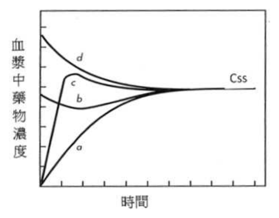
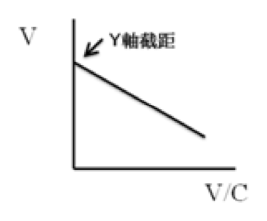
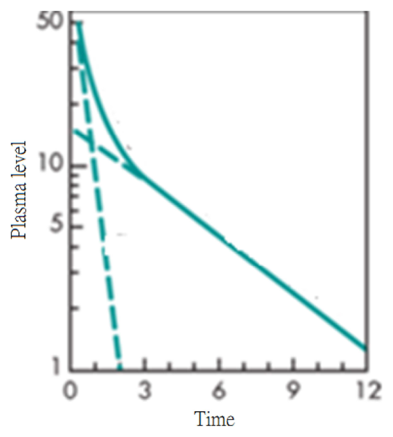

開卷有益 ／
藥師 ／ 藥劑學與生物藥劑學 ／ 109 年第 1 次109 年第 1 次藥師藥劑學與生物藥劑學試題與答案
這一頁是民國 109 年第 1 次藥師藥劑學與生物藥劑學的整份歷屆試題，共 80 題，題目與標準答案出自考選部「國家考試試題及測驗式試題答案」開放資料，其中 76 題附有詳解。以下逐題列出題幹、選項與答案；要計時作答或記錄成績，請用線上練習。
考選部原始場次代碼：109020
線上作答這一科 →
全部 80 題
第 1 題
某藥物（6% w/v）以零階次動力學降解，其反應速率為0.05 mg/mL/h，此藥物的半衰期為多少天？
（A） 12.5（B） 25（C） 60（D） 300答案：（B）
詳解與考點 正解：本題是零階次降解，半衰期由初始濃度與零階速率決定。先換算濃度：6% w/v = 6 g/100 mL = 60 mg/mL。零階次半衰期 t½ = C₀/(2k₀) = 60 mg/mL / [2 × 0.05 mg/mL/h] = 600 h；再換算為天數，600 h / 24 h/day = 25 day，即 25 天，因此（B）25 天正確，故選 B。
A：12.5 天是把已達半衰期的 25 天再除以 2。零階次降解只需計算濃度由 60 mg/mL 降至 30 mg/mL 所需的一次時間，不能重複折半。
C：60 天相當於 1,440 h，與題示速率下的 600 h 不符。計算時若未先把 6% w/v 轉成 60 mg/mL，容易讓濃度與速率的單位無法相消。
D：300 天相當於 7,200 h，遠大於由 C₀/(2k₀) 得到的 600 h，並非本題數值代入的結果。
本題考點：零階次降解（zero-order degradation）——半衰期用 t½ = C₀/(2k₀)，會隨初始濃度改變；濃度單位換算（concentration conversion）——遇到 % w/v 時先換成 g/100 mL，再與 mg/mL/h 的速率統一單位。
第 2 題
下列那一項不是5FU（fluorouracil）前驅藥capecitabine設計之主要目的？
（A） 增加溶解度（B） 口服吸收（C） 降低全身毒性（D） 對腫瘤具選擇性答案：（A）
詳解與考點 正解：關鍵在 capecitabine 是 5-FU 的口服前驅藥，設計核心是改善口服投與與活化位置，不是以提升溶解度為主要目標。capecitabine 經吸收後逐步代謝為 5-FU，最後一步可在腫瘤組織相對較高的 thymidine phosphorylase 催化下完成，藉此提高腫瘤選擇性並減少正常組織的暴露；因此（A）增加溶解度不是其主要設計目的，故選 A。
B：口服吸收正是 capecitabine 開發的重要目的。相較於直接以 5-FU 長期口服投與，前驅藥策略可使藥物經腸胃道吸收後再轉化，故此項不是答案。
C：降低全身毒性與腫瘤內較偏向的活化有關。分辨關鍵在活化位置：藥物不只要進入體內，也要盡量在腫瘤部位形成具細胞毒性的 5-FU。
D：對腫瘤具選擇性是 capecitabine 的設計方向之一，因為其代謝路徑利用腫瘤組織與正常組織間酵素活性的差異，故非本題所問的非主要目的。
本題考點：前驅藥設計（prodrug design）——先辨認前驅藥要改善的是吸收、分布或活化位置，再判斷選項是否屬主要目標；腫瘤選擇性活化（tumor-selective activation）——比較酵素在腫瘤與正常組織的相對活性，判斷能否降低全身暴露。
第 3 題
有關密度單位表示法，下列何者錯誤？
（A） mg/in（B） g/pint（C） gr/mL（D） lb/gal答案：（A）
詳解與考點 正解：密度的量綱必須是質量除以體積。（A）mg/in 的分母是長度 in，不是體積，因此量綱為質量/長度，不能表示密度，故選 A。
B：g/pint 以 g 表示質量、pint 表示體積，量綱符合質量/體積，雖非國際單位制，仍可作為密度表示法。
C：gr/mL 中的 gr 為 grain 的質量單位，mL 為體積單位，所以量綱仍是質量/體積，並非錯誤表示法。
D：lb/gal 由 lb 的質量與 gal 的體積相除，量綱同樣正確；單位系統不同不會改變其作為密度單位的性質。
本題考點：量綱分析（dimensional analysis）——先看分子與分母各代表何種物理量，質量/體積才是密度；密度單位（density unit）——單位制可不同，但只要保留質量除以體積的結構就能互相換算。
第 4 題
有關影響溶解度的因素之敘述，下列何者錯誤？
（A） 溶質和溶劑的分子性質越接近時，通常其溶解度會越高（B） 四氯化碳由於結構中有四個C-Cl共價鍵，使其成為極性分子（C） 溶質和溶劑的分子性質越接近，通常此溶質在此溶劑溶解的速率會越快（D） 離子化合物在極性溶劑中的溶解度較高，非極性化合物在非極性溶劑中的溶解度較高答案：（B）
詳解與考點 正解：本題找的是影響溶解度的錯誤敘述，關鍵在分子整體極性而非單一鍵是否極性。（B）四氯化碳的 C-Cl 鍵雖各有偶極，但四面體對稱排列使偶極彼此抵消，整個 CCl4 為非極性分子，故選 B。
A：溶質與溶劑的分子性質接近時，兩者的分子間作用力較相容，通常較容易形成溶液。這是「相似相溶」的溶解度判準，敘述正確。
C：分子性質相近可使潤濕與溶劑化較有利，通常也有助於溶出。實際溶解速率還會受表面積與攪拌等動力因素影響，但題幹以「通常」表述並無誤。
D：離子化合物較能與極性溶劑進行離子－偶極作用，非極性化合物則較適合非極性溶劑；此項與分子間作用力的判斷一致。
本題考點：相似相溶（like dissolves like）——判斷溶解度時比較溶質與溶劑的整體極性及可形成的分子間作用力；分子偶極（molecular dipole）——不可只看是否含極性鍵，還要判斷分子幾何能否使鍵偶極相互抵消。
第 5 題
眼用溶液中，增加眼用溶液之黏稠度最主要目的為何？
（A） 可增進滅菌之效果（B） 可增進藥品之安定性（C） 可增進用藥時之抗菌性（D） 可延長與眼睛接觸之時間答案：（D）
詳解與考點 正解：眼用溶液滴入後容易因眨眼與淚液排出而流失，增加黏稠度的主要作用是減慢排出速度並延長停留時間。因此（D）延長與眼睛接觸之時間最符合處方設計目的，故選 D。
A：滅菌效果取決於適當的滅菌製程與無菌操作，單純提高黏稠度不會使製劑更容易達到無菌。
B：黏稠度可能影響某些物理性質，但眼用溶液添加增黏劑的首要目的不是提高化學或物理安定性，而是增加眼表接觸時間。
C：抗菌性須由具適當用途的防腐劑或抗菌成分提供；增黏劑的流變功能不能取代抗菌防腐作用。
本題考點：眼用製劑滯留時間（ocular residence time）——遇到增黏劑時先判斷是否為降低淚液排除、延長藥物接觸；眼用製劑無菌性（ophthalmic sterility）——無菌與防腐須分別由製程及成分控制，不可由黏度推論。
第 6 題
Lugol's solution為下列何種溶液劑？
（A） 碘溶液（iodine solution）（B） 複方碘溶液（compound iodine solution）（C） 碘化鉀溶液（potassium iodine solution）（D） 普維酮－碘溶液（povidone-iodine solution）答案：（B）
詳解與考點 正解：Lugol's solution 是碘與碘化鉀組成的水性複方製劑，碘化鉀可協助碘在水中形成溶液，因此其正式製劑名稱為複方碘溶液（compound iodine solution），故選 B。
A：碘溶液（iodine solution）是較一般的名稱，不能精確指出 Lugol's solution 所含的碘化鉀組成；分辨關鍵在 Lugol's solution 不是僅有碘的單一成分製劑。
C：碘化鉀溶液（potassium iodide solution；選項印作 potassium iodine solution）只描述碘化鉀本身，缺少 Lugol's solution 中的碘，成分不完整。
D：普維酮－碘溶液（povidone-iodine solution）是碘與 povidone 的複合製劑，與碘－碘化鉀系統不同，不能互換。
本題考點：Lugol's solution（compound iodine solution）——辨認傳統製劑名稱時，先核對其全部主要成分而非只看一種有效成分；碘的助溶系統（iodine solubilization）——碘化物可使碘在水性系統中形成可溶性物種，與 povidone 複合系統不同。
第 7 題
膠體粒子布朗運動的位移與下列何項因素無關？
（A） 濃度（B） 絕對溫度（C） 粒徑（D） 液體黏稠度答案：（A）
詳解與考點 正解：膠體粒子在固定時間內的布朗運動位移，主要取決於擴散係數；在稀薄系統中，D ∝ T/(ηr)，其中 T 為絕對溫度、η 為介質黏稠度、r 為粒徑。（A）濃度不在這個基本關係式中，故與位移無直接關係，故選 A。
B：絕對溫度升高會增加粒子的熱運動能量，使擴散係數增大，位移隨之增加，因此不是答案。
C：粒徑變大時阻力增加，擴散係數下降，布朗運動的位移會變小；粒徑是影響因子。
D：液體黏稠度越高，粒子受到的黏滯阻力越大，擴散係數與位移都會降低，故此項也有關。
本題考點：布朗運動（Brownian motion）——在固定觀察時間內，以溫度、介質黏度與粒徑判斷位移方向；Stokes-Einstein 關係（Stokes-Einstein relation）——D 與 T 成正比、與 η 和 r 成反比，先辨識題目是否假設稀薄膠體。
第 8 題
甲乙丙三種物質，其彈性係數分別是甲：2×1012 dyne/cm2；乙：2×1011 dyne/cm2；丙：1×109 dyne/cm2，若施 以相同的應力，則在彈性限度內三種物質之單位伸長量的大小關係為何？
（A） 甲＞乙＞丙（B） 丙＞乙＞甲（C） 乙＞丙＞甲（D） 乙＞甲＞丙答案：（B）
詳解與考點 正解：題幹指定施加相同應力，單位伸長量即應變 ε 由 ε = σ/E 決定，與彈性係數 E 成反比。甲、乙、丙的 E 依序為 2 × 10^12、2 × 10^11、1 × 10^9 dyne/cm²，所以 E 丙＜E 乙＜E 甲，應變便是丙＞乙＞甲，因此（B）正確，故選 B。
A：甲＞乙＞丙把彈性係數與伸長量誤判為正比。同一應力下，材料越硬、E 越大，反而越不容易伸長。
C：乙＞丙＞甲 雖將甲排在最小，卻把丙與乙的順序倒置；丙的 E 最小，應有最大單位伸長量。
D：乙＞甲＞丙 同時把 E 最大的甲放在中間、E 最小的丙放在最後，與 ε = σ/E 的反比關係不符。
本題考點：楊氏係數（Young's modulus）——同一應力下以 ε = σ/E 比較變形，E 越大則單位伸長量越小；應力與應變（stress and strain）——先確認題目是否固定應力，再決定可否直接依彈性係數反向排序。
第 9 題
下列何者不能作為膠體質粒平均分子量的測量方法？
（A） 掃描式電子顯微鏡測粒徑（B） 超速離心機測沉降速率（C） 滲透壓儀測滲透壓（D） 濁度計測散射光答案：（A）
詳解與考點 正解：平均分子量的測定需要取得與膠體粒子質量相關的性質。（A）掃描式電子顯微鏡可觀察粒徑與形貌，但量到的是尺寸，不是可直接換算為平均分子量的膠體性質，故選 A。
B：超速離心的沉降速率可提供沉降行為資料，配合適當的分析可用於估算大分子或膠體粒子的分子量，因此不是答案。
C：滲透壓與溶液中粒子數濃度有關，可用於求得數均分子量；分辨關鍵在它量的是依數目的依數性質，而非粒徑。
D：濁度計測得的散射光可配合濃度關係分析分子量，這類光散射法常用於取得重均分子量，故非本題所問。
本題考點：分子量測定（molecular weight determination）——先判斷儀器量到的是粒徑、粒子數或散射強度，再連結可得到的平均分子量；滲透壓法（osmometry）——依粒子數濃度判讀，適合連到數均分子量；光散射法（light scattering）——利用散射與濃度的關係判讀，常連到重均分子量。
第 10 題
具有搖變性之塑性流體，下列敘述何者正確？
（A） 流變曲線經過原點（B） 受力時流變曲線有啟動值（C） 減小應力後流變曲線為凹面向上（D） 布朗運動越快則滯後環區域越大答案：（B）
詳解與考點 正解：塑性流體必須先克服啟動值才開始流動；若又具有搖變性，則會因受力時間產生結構破壞與滯後環。因此（B）受力時流變曲線有啟動值正確，故選 B。
A：流變曲線通過原點代表沒有啟動值，較符合牛頓流體或某些無啟動值的流動型態；塑性流體的曲線應在切應力軸上有截距。
C：搖變性在減小應力時的重點是回程曲線與去程曲線不重合，形成滯後環。其曲線不能一概以「凹面向上」作為判準，故此敘述不正確。
D：布朗運動是粒子的熱運動，並非決定搖變性滯後環面積的直接變數。滯後環主要反映結構在剪切下破壞與停止剪切後重建的時間依賴性。
本題考點：塑性流動（plastic flow）——先看是否存在啟動值，超過該值才有可測流動；搖變性（thixotropy）——以去程與回程不重合的滯後環判斷結構隨時間的可逆破壞與恢復。
第 11 題
依據愛因斯坦黏滯係數方程式，溶液的黏稠度除以溶劑的黏稠度，其比值稱為下列何者？
（A） relative viscosity（B） reduced viscosity（C） specific viscosity（D） intrinsic viscosity答案：（A）
詳解與考點 正解：題目所述的比值就是溶液黏稠度 η 與純溶劑黏稠度 η₀ 的直接比值，寫成 ηr = η/η₀，名稱為 relative viscosity，因此（A）正確，故選 A。
B：reduced viscosity 是 specific viscosity 再除以濃度，常寫成 ηsp/c，並非 η/η₀ 的直接比值。
C：specific viscosity 表示溶液相對於溶劑增加的比例，ηsp = (η - η₀)/η₀；它少了相對黏度中的基準 1。
D：intrinsic viscosity 是 ηsp/c 在濃度趨近零時的外推極限，用於反映高分子在特定溶劑中的流體力學體積，定義更進一步。
本題考點：相對黏度（relative viscosity）——看到 η/η₀ 的直接比值時立即辨認為 relative viscosity；比黏度與還原黏度（specific and reduced viscosity）——先由 ηsp = ηr - 1 求增加比例，再視是否除以濃度區分 reduced viscosity。
第 12 題
在24℃下，利用Langmuir isotherm以不同的Y座標，畫出下面二個圖形，下列敘述何者正確？（X：吸附溶質 的量；m：吸附劑的量）
（A） 1與A有較佳單層吸附量（B） 1與B有較佳單層吸附量（C） 2與A有較佳單層吸附量（D） 2與B有較佳單層吸附量答案：（C）
第 13 題
一軟膏擬以20 cm/s速度，塗抹於皮膚之厚度為0.05 cm，則其切變速率為何？
（A） 400 s-1（B） 1 s-1（C） 400 cm2/s（D） 1 cm2/s答案：（A）
詳解與考點 正解：軟膏塗抹時的切變速率取速度梯度，公式為 γ̇ = dv/dx。速度為 20 cm/s、皮膚上的厚度為 0.05 cm，所以 γ̇ = 20 cm/s / 0.05 cm = 400 s^-1；長度單位相消後只剩時間倒數，因此（A）正確，故選 A。
B：1 s^-1 不符合 20 cm/s 除以 0.05 cm 的結果。切變速率應是速度差除以兩平面間距，而非將兩個數值直接相乘或忽略厚度。
C：400 cm²/s 的量綱是面積/時間，可用於描述擴散係數或運動黏度，不是切變速率的時間倒數量綱。
D：1 cm²/s 同樣是面積/時間，且數值也不符合速度梯度的計算；切變速率不應保留 cm²。
本題考點：切變速率（shear rate）——以 γ̇ = dv/dx 計算，速度除以層厚後的單位必為 s^-1；量綱檢查（dimensional check）——算完先看長度是否相消，若留下 cm²/s 即表示求到的不是切變速率。
第 14 題
某懸浮液之沉降體積F與F∞值分別為0.1與0.1時，此懸浮液性質為何？
（A） 凝絮（flocculation）（B） 無凝絮現象（no flocculation）（C） β值小於1（D） β值大於1答案：（B）
詳解與考點 正解：沉降體積 F 與無凝絮系統的終極沉降體積 F∞ 可用來求凝絮程度 β，β = F/F∞ = 0.1/0.1 = 1。β 等於 1 表示沒有因凝絮而增加沉降體積，所以（B）無凝絮現象正確，故選 B。
A：凝絮時鬆散的絮團會形成較大的沉降體積，通常有 F>F∞ 與 β＞1；本題兩個數值相等，不符合凝絮。
C：β 小於 1 與本題代入所得的 1 不符。以 F∞ 為比較基準時，凝絮程度不應由相等的兩個沉降體積推得小於 1。
D：β 大於 1 才表示凝絮使沉降體積增加；本題 F = F∞，沒有增加，故不能選此項。
本題考點：沉降體積（sedimentation volume）——先比較 F 與 F∞，F 較大才表示絮團造成較蓬鬆的沉積；凝絮程度（degree of flocculation）——以 β = F/F∞ 判讀，β = 1 為無凝絮，β＞1 才是凝絮。
第 15 題
有關W/O乳劑之敘述，下列何者錯誤？
（A） 此油相為外相（B） 此水相為分散相（C） 此劑型易形成透明狀（D） 此乳劑須添加界面活性劑答案：（C）
詳解與考點 正解：W/O 乳劑是 water-in-oil 乳劑，油相為連續外相，水相為分散內相。一般乳劑因兩相界面造成光散射而呈混濁外觀，不會因為是 W/O 就容易透明；因此（C）錯誤，故選 C。
A：W/O 的油相包圍水滴並形成連續相，故油相為外相的敘述正確。分辨關鍵在名稱中的 in oil 表示水分散於油中。
B：W/O 的水相以液滴形式存在於油相內，屬分散相，與乳劑命名及相別一致。
D：乳劑需要適當的界面活性劑降低界面張力並協助穩定分散相；W/O 與 O/W 的差異在乳化劑親水親油平衡偏好，不在於是否需要界面活性劑。
本題考點：W/O 乳劑（water-in-oil emulsion）——以「水在油中」判定油為外相、水為分散相；乳劑外觀與穩定（emulsion appearance and stability）——一般乳劑會散射光，透明外觀不能由 W/O 類型直接推得。
第 16 題
某液體以受力時之切應力與切變速率作圖呈現通過原點的直線，今改以切變速率為X軸，黏稠度為Y軸作圖， 隨著切變速率增加，則該液體的黏稠度值如何變化？
（A） 增加（B） 降低（C） 不變（D） 先增加後降低答案：（C）
詳解與考點 正解：切應力與切變速率作圖為通過原點的直線，表示 τ = ηγ̇，斜率 η 固定，這是牛頓流體的行為。改以切變速率為 X 軸、黏稠度為 Y 軸時，η 不隨切變速率改變，因此（C）不變正確，故選 C。
A：黏稠度隨切變速率增加而增加是剪切增稠行為，不符合切應力－切變速率成正比且通過原點的條件。
B：黏稠度隨切變速率增加而降低是剪切變稀行為；若有此現象，原先的切應力－切變速率圖不會是固定斜率的直線。
D：先增加後降低代表非牛頓流體在不同剪切區間有不同流變反應，與題幹指定的單一直線關係不符。
本題考點：牛頓流體（Newtonian fluid）——看到 τ = ηγ̇ 的通過原點直線時，直接判斷 η 為常數；流變曲線轉軸（rheogram transformation）——將應力－速率圖換成黏度－速率圖後，固定斜率會表現為水平線。
第 17 題
以可可脂製作基準為2克的栓劑，現擬製作含有水合三氯乙醛500 mg（藥量替換因子為0.67）之栓劑，則依 dosage replacement factor method計算，製出之每個成品應為多少重量（g）？
（A） 2.000（B） 2.019（C） 2.085（D） 2.180答案：（D）
詳解與考點 正解：取代價 f 代表 1 克藥物所能取代之可可脂重量——取代之基劑重量＝藥物重量×f=0.5 g×0.67=0.335 g；實際所需可可脂重量＝空白栓劑重量－取代之基劑重量＝2 g-0.335 g=1.665 g；成品總重量＝1.665 g+0.5 g=2.165 g。四個選項中以 D（2.180）最接近；計算值 2.165 與選項 D 之 2.180 存在約 0.015 g 之落差，屬選項數值採近似值或四捨五入取捨之差異，並非計算方法有誤，故選 D。
A：2.000 g恰等於空白栓劑重量，相當於忽略了藥物本身對於取代體積及重量的影響，未套用取代價進行計算。
B：2.019 g與依標準取代價公式計算所得的數值有落差，較難以本題給定的f值與藥量重新推得。
C：2.085 g同樣與依標準公式計算所得結果有落差，不是取代價法計算下最貼近的數值。
本題考點：栓劑劑量取代價法（dosage replacement factor method）——取代價f代表1克藥物所能取代的基劑重量，成品總重量=（空白栓劑重量-藥物取代之基劑重量）+藥物重量；水合三氯乙醛栓劑製備的特殊性——此藥為易與可可脂形成低共熔物之藥物，實務配製時常需額外注意基劑選擇與軟化點控制，惟此非本計算題的核心考點。
第 18 題
下列軟膏基劑中，何者具有不含水、可吸水但不溶於水、無法用水洗掉的特性？
（A） 水溶性軟膏基劑（B） 乳劑型軟膏基劑（C） 吸收性軟膏基劑（D） 油脂性軟膏基劑答案：（C）
詳解與考點 正解：不含水、可吸水、但不溶於水且不能用水洗掉，是吸收性軟膏基劑的組合特徵。（C）吸收性軟膏基劑本身通常為無水油性基劑，可藉適當成分吸收水分形成 W/O 型系統，仍不具水洗性，故選 C。
A：水溶性軟膏基劑可溶於水，通常可用水洗掉，與題幹「不溶於水、無法用水洗掉」相反。
B：乳劑型軟膏基劑本來就含有水相與油相，不能概括為不含水；是否可水洗還要看其連續相，並非題幹描述的完整組合。
D：油脂性軟膏基劑雖不含水、也不溶於水且不易水洗，但缺少吸收水分的能力，故不是最佳答案。
本題考點：吸收性軟膏基劑（absorption base）——遇到「無水但可吸水」時優先判斷為 absorption base；軟膏基劑分類（ointment base classification）——同時比較是否含水、可否吸水、是否水洗，避免只憑油性外觀作答。
第 19 題
有關糊劑的敘述，下列何者錯誤？
（A） 由水合果膠製成軟膏狀的外用製劑（B） 氧化鋅糊屬脂肪質糊劑，局部保護用（C） 糊劑在體溫時軟化，有助於藥物的吸收（D） 含有較多粉末藥品，容易吸收傷口滲出液答案：（C）
詳解與考點 正解：糊劑含有較高比例的細粉固體，目的在於附著、保護與吸收滲出液，而非在體溫下明顯軟化以促進吸收。（C）把糊劑說成在體溫時軟化並有助藥物吸收，與其高固體含量造成的較硬、較不易流動特性相反，故選 C。
A：以水合果膠製成軟膏狀的外用製劑可屬親水性糊劑的例子，敘述符合糊劑可依基劑分為不同類型的概念。
B：氧化鋅糊屬脂肪質糊劑，可作為皮膚表面的局部保護劑；其高粉末含量有助形成保護膜，故非錯誤敘述。
D：糊劑比一般軟膏含有較多粉末成分，能吸收傷口滲出液，這正是其外用保護與乾燥用途的重要理由。
本題考點：糊劑（paste）——看到高比例粉末時，優先連結附著、保護與吸收滲出液，而非促進經皮吸收；脂肪質與親水性糊劑（oleaginous and hydrophilic pastes）——先由基劑與粉末比例判斷用途，再區分是否適合處理滲出液。
第 20 題
下列何種因子替代法常用於計算栓劑中藥物與基劑間的替代量？
（A） 重量（B） 體積（C） 密度（D） 黏度答案：（C）
詳解與考點 正解：栓劑的栓模容積固定，加入藥物後會排擠部分基劑，必須以兩者在相同體積下的質量關係換算。密度因子（density factor）正是用來把藥物量換算為被替代的基劑量，因此（C）可用於計算替代量，故選 C。
A：重量只是配方中各成分的用量；若未連結栓模體積與藥物、基劑的密度，無法判定多少基劑被排擠。
B：體積可用來表示栓模容量，卻不能單獨換算藥物與基劑的質量替代關係，因為二者密度通常不同。
D：黏度會影響熔融基劑的流動與充填性，但不是計算栓劑中藥物取代基劑量的換算因子。
本題考點：密度因子（density factor）——栓劑配方要由藥物量回推基劑減量時，先以相同體積下的密度關係換算；栓模容量（mold capacity）——模穴體積固定，但實際基劑用量仍要扣除藥物所占體積。
第 21 題
苯甲酸與聚乙二醇製作軟膏時，應在基劑中加入下列何者，以增進二者的相容性？
（A） cetyl alcohol（B） stearyl alcohol（C） 1,6-hexanediol（D） 1,2,6-hexanetriol答案：（D）
詳解與考點 正解：苯甲酸置入聚乙二醇基劑時，關鍵是選擇能提高極性與共溶能力的助劑。1,2,6-hexanetriol 具有三個羥基，較能作為親水性基劑中的相容性調整劑，因此（D）最適合，故選 D。
A：cetyl alcohol 是長鏈脂肪醇，偏親油，較適合用於油性或乳化型基劑的稠度調整，不能有效改善苯甲酸與聚乙二醇之間的親水性相容問題。
B：stearyl alcohol 同樣是偏親油的長鏈脂肪醇；它可影響軟膏稠度，卻不是此配方所需的多羥基共溶助劑。
C：1,6-hexanediol 的兩個羥基分處碳鏈兩端，缺少 1,2,6-hexanetriol 所具的鄰位二醇（1,2-diol）結構；鄰位羥基能同時與苯甲酸及聚乙二醇形成較密集的氫鍵，溶劑化能力較強，只在鏈兩端各帶一個羥基達不到同樣效果，因而不是本題的最佳選擇。
本題考點：共溶與相容性（cosolvency and compatibility）——藥物與親水性基劑相容不足時，優先比較助劑的極性與可形成氫鍵的能力；多羥基醇（polyol）——在親水性半固體製劑中，羥基數與極性較高者較能協助溶質與基劑相容。
第 22 題
W/O型乳劑，是屬於下列那一種軟膏基劑？
（A） 烴基基劑（B） 吸收性基劑（C） 水和性基劑（D） 水溶性基劑答案：（B）
詳解與考點 正解：W/O 型乳劑的外相是油、水相分散在油相中，屬可吸收水分並形成或維持 W/O 乳劑的吸收性基劑（absorption base），因此（B）正確，故選 B。
A：烴基基劑以油性成分為主，通常不含足以穩定大量水相的乳化系統；它本身不是 W/O 乳劑基劑的分類。
C：水和性基劑常以 O/W 型乳劑為代表，水為外相，洗除性與外相方向都和 W/O 型不同。
D：水溶性基劑多以聚乙二醇類為主，可溶於水而非由油相包覆水相，不能據此判為 W/O 型乳劑。
本題考點：乳劑外相（continuous phase）——先看水或油哪一相連續存在，W/O 表示油為外相；吸收性基劑（absorption base）——遇到可吸收水分並維持油性外相的軟膏基劑時，歸入此類而非水溶性基劑。
第 23 題
經皮貼片產品進行溶離試驗時，依USP-NF及Non-USP-NF可採用下列何種裝置？
（A） Apparatus 1（B） Apparatus 3（C） Apparatus 4（D） Apparatus 5答案：（D）
詳解與考點 正解：經皮貼片是平面劑型，溶離試驗須讓貼片以固定方式接觸介質。依題幹所指 USP-NF 與 Non-USP-NF 的方法，Apparatus 5 為 paddle over disk，正是用於經皮系統的裝置，因此（D）正確，故選 D。
A：Apparatus 1 是 basket 裝置，主要用於會在介質中自由移動的固體口服劑型，並非本題貼片的指定固定方式。
B：Apparatus 3 為 reciprocating cylinder，其往復運動設計與貼片以圓盤固定的 paddle over disk 方法不同。
C：Apparatus 4 為 flow-through cell，可用於特定需連續流動介質的產品，但不是題幹所問經皮貼片的指定裝置。
本題考點：經皮系統溶離試驗（transdermal system dissolution testing）——遇到貼片等平面劑型時，先辨識是否需以圓盤固定樣品；paddle over disk（Apparatus 5）——依題幹所採藥典方法判斷經皮貼片釋出時，對應此裝置；另須記得藥典列給經皮系統的裝置尚有 Apparatus 6（rotating cylinder）與 Apparatus 7（reciprocating holder），只是本題選項未列，不能反過來記成經皮貼片只能用 Apparatus 5。
第 24 題
下列何種藥物釋出機轉是最具代表性的延遲性（delayed-release）口服劑型？
（A） 腸溶機制（enteric coating）（B） 蝕溶機制（eroding）（C） 酵素消化機制（enzyme digesting）（D） 細菌水解機制（hydrolyzing）答案：（A）
詳解與考點 正解：延遲性釋放的核心是先在一段生理環境中不釋放，待條件改變後才釋放。腸溶膜衣在胃酸中保持完整、進入較高 pH 的腸道後溶解，是 delayed-release 口服劑型最具代表性的機轉，因此（A）正確，故選 A。
B：蝕溶機制可藉基質逐漸侵蝕延長或調節釋出，但不必然具有由胃到腸的明確延遲開關。
C：酵素消化機制可設計成特定部位釋放，卻仰賴特定酵素環境，並非一般延遲性口服劑型的代表性機轉。
D：細菌水解機制常用於結腸標的釋放；它也可能造成延後釋放，但與腸溶膜衣相比屬較專一的部位標的策略。
本題考點：延遲性釋放（delayed release）——判斷重點是先有不釋放的時間或環境門檻，再在觸發條件下釋放；腸溶膜衣（enteric coating）——題幹出現胃酸保護或腸道才釋放時，優先辨識為 pH 觸發的腸溶設計。
第 25 題
親水性纖維素基質錠片（matrix tablets）的製備常採用直接打錠方式。當高速旋轉式打錠機（rotary tabletting machine）的轉速越快，則對此類錠片打錠最常見之影響為何？
（A） 重量偏差度可能越大（B） 錠片的硬度可能增大（C） 含量均勻度可能越佳（D） 錠片的脆度可能越高答案：（A）
詳解與考點 正解：高速旋轉式打錠機轉速提高時，模穴接受粉體的充填時間縮短。親水性纖維素基質錠採直接打錠時，充填不足或不均會先反映為錠重變異，因此（A）重量偏差度可能越大是最常見的影響，故選 A。
B：轉速加快不等於壓縮力增加，且停留時間縮短通常不會使硬度必然增大；硬度仍取決於壓縮條件與配方。
C：含量均勻度須靠原料混合與穩定充填維持，較快轉速不會改善充填不均，反而可能讓錠重變異更明顯。
D：脆度受配方、壓縮力與錠片硬度共同影響，不能由轉速提高單獨推論為必然升高，更不是本題所問最直接的製程影響。
本題考點：模穴充填（die filling）——直接打錠時先看粉體進入模穴的時間與流動性，充填不穩會造成錠重變異；錠重偏差（weight variation）——轉速提高後若供料來不及補足，最先監測的是每錠填入質量的一致性。
第 26 題
通常錠劑厚度的誤差度應控制在下列何範圍內？
（A） ±5%（B） ±7%（C） ±10%（D） ±12%答案：（A）
詳解與考點 正解：題幹問一般錠劑厚度的通常控制範圍，厚度是壓錠製程中用來反映模穴充填與壓縮一致性的物理指標。模穴充填量或壓縮力一有漂移，最先反映在厚度上，因此製程管制通常要求各錠厚度與標準值的差異不超過 ±5%；超出這個帶寬，代表製程變異已大到會牽動重量、硬度與含量均一度，屬不可接受。（A）正確，故選 A。
B、C、D：±7%、±10% 與 ±12% 都比通常的 ±5% 寬鬆。分辨時只要比較允收區間大小，這三項皆無法符合本題所問的一般控制標準。
本題考點：錠劑厚度控制（tablet thickness control）——製程中以厚度監測壓縮一致性時，依一般規格先以 ±5% 為判準；物理性品質管制（physical quality control）——錠重、厚度、硬度與脆度須分別量測，不能用其中一項取代其他項目。
第 27 題
下列何者比較不會造成壓錠時重量差異過大的問題？
（A） 顆粒流動性不良（B） 顆粒大小差異大（C） 下沖模下降幅度不一（D） 上沖模下降幅度不一答案：（D）
詳解與考點 正解：壓錠前的錠重主要由模穴內填入的粉體質量決定。上沖模在充填後主要改變壓縮力、硬度與厚度，不直接改變模穴的初始充填容積，因此（D）比較不會造成重量差異過大，故選 D。
A：顆粒流動性不良會使各模穴獲得的粉量不一致，直接造成錠重變異。
B：顆粒大小差異大容易發生分離與堆積差異，使每次充填的體積密度與質量不穩定。
C：下沖模下降幅度決定模穴深度與可充填容積，幅度不一會直接改變每錠填入的粉量。
本題考點：模穴容積（die cavity volume）——判斷錠重變異時，先看下沖模位置與粉體充填是否改變初始容積；上沖模功能（upper punch function）——上沖模主要控制壓縮階段的硬度與厚度，不是決定充填質量的第一因子。
第 28 題
有關錠劑的評估，下列敘述何者錯誤？
（A） 一般錠劑厚度的誤差標準值應在±5%以內（B） 脆度分析時重量損失應小於1%（C） 硬度應大於5公斤（D） 壓錠壓力應大於3,650磅本題送分，無標準答案
詳解與考點 本題經考選部公告一律給分。(C)「硬度應大於5公斤」與(D)「壓錠壓力應大於3,650磅」皆以單一絕對數值規範錠劑品質，惟不同劑型、不同錠重之錠劑其合格硬度與所需壓錠壓力本有相當範圍差異，教材通常僅列參考區間而非硬性下限，故(C)(D)是否為「錯誤」敘述同時具爭議性，難以擇一判定。(A)厚度誤差±5%以內、(B)脆度重量損失應小於1%，皆為業界普遍採用之標準敘述，較無爭議可排除。作答以現行藥劑學錠劑品質評估標準為準。
第 29 題
微膠囊化（microencapsulation）包覆之過程，藉由引發溶解的包覆材料相分離（coacervation）而包覆於蕊物 質表面所致，下列何者不可用來引發相分離？
（A） 不同溶解度的溶媒（B） 不同分子量的膠體（C） 不同電荷性的材料（D） 不同酸鹼值的溶液答案：（B）
詳解與考點 正解：相分離包覆法的關鍵是降低包覆材料在原溶媒中的溶解度，或改變其帶電狀態，使聚合物富集成 coacervate 並沉積在蕊物質表面。不同分子量的膠體本身不構成明確的相分離觸發方式，因此（B）不可用來引發相分離，故選 B。
A：加入對包覆材料溶解力不同的溶媒可降低其溶解度，促使聚合物自溶液中分離，是常用的相分離觸發方式。
C：帶相反電荷的材料可經靜電作用形成 complex coacervation，使包覆材料聚集並包覆蕊物質。
D：改變溶液 pH 會影響高分子或膠體的電離與溶解性，因此可用來促進相分離。
本題考點：相分離包覆（coacervation）——要判斷能否引發相分離時，看該操作是否改變包覆材料的溶解度或電荷狀態；複凝聚（complex coacervation）——兩種帶相反電荷的高分子相遇時，可藉靜電聚集形成包覆層。
第 30 題
極難溶性藥品由親水性纖維素（hydrophilic cellulose）材質製備的基質性錠片（matrix tablet），其主要釋出機 轉為何？
（A） 溶蝕機轉（erosion）（B） 滲透機轉（diffusion）（C） 離子交換（ion exchange）（D） 滲透壓力（osmosis）答案：（A）
詳解與考點 正解：極難溶性藥物在親水性纖維素基質中不易先溶解成可擴散的分子；基質吸水成膠後，隨聚合物逐步溶蝕而釋出藥物的影響較大。因此（A）溶蝕機轉是主要釋出機轉，故選 A。
B：diffusion 是親水性基質常見的釋出途徑，但較仰賴藥物先在水化膠層中溶解；極難溶性藥物不符合這個主要條件。
C：離子交換需有離子交換樹脂與可交換的帶電藥物，本題只有親水性纖維素基質，沒有這項設計。
D：滲透壓釋放需半透膜與滲透壓驅動系統，並非一般親水性纖維素基質錠的基本構造。
本題考點：親水性基質錠（hydrophilic matrix tablet）——先依藥物溶解度判斷主導途徑，難溶藥多看基質溶蝕；基質溶蝕（erosion）——聚合物水化後逐步流失時，會帶出原先分散於其中的難溶性藥物。
第 31 題
欲將結塊之樟腦於研缽中研成細粉，為增加研磨效率可添加少量的溶劑來助研，下列溶劑何者較適合？
（A） 乙醇（B） 甘油（C） 聚乙二醇（D） 丙二醇答案：（A）
詳解與考點 正解：樟腦結塊後助研要選少量即可暫時潤濕或溶解表面、又能迅速揮發的溶劑。乙醇可在研磨時協助粉碎，後續容易揮發而不留下黏稠殘留，因此（A）較適合，故選 A。
B：甘油黏度高且不易揮發，加入後容易使粉末黏結成膏狀，不利得到乾燥細粉。
C：聚乙二醇為不易揮發的親水性高分子材料，可能增加黏著性，不能提供乙醇式的暫時助研效果。
D：丙二醇會留在粉末中，揮發性不如乙醇，較可能造成濕潤與黏結，而非快速恢復為細粉。
本題考點：助研（pulverization by intervention）——研磨易結塊物質時，選少量可暫時作用且易去除的揮發性溶劑；揮發性溶劑（volatile solvent）——若目標是乾燥細粉，溶劑必須在助研後不留下會黏結粉末的液體殘留。
第 32 題
粉末質粒在重力作用下，其流動性常受到粉末間之磨擦力及吸附力之影響，就此相關敘述之比較，下列何者 最正確？
（A） 粉末粒徑大於10 μm以上時，顆粒間吸附力會相對性地增大（B） 當混合不同材質之粉末時，粉末間之密度差異性通常對整個粉體之流動性影響很小（C） 評估粉末流動性時，通常以flow meter之測定值比評估粉末安息角較具實用參考價值（D） 膠囊劑之重量差異受粉末流動性之影響小答案：（C）
詳解與考點 正解：粉末流動性要優先採用能直接反映實際出料行為的量測。flow meter 可量得粉末經孔口或管道流出的表現，比單看安息角更接近充填與製造時的實用判斷，因此（C）最正確，故選 C。
A：粒徑增大到一定程度後，重力相對於顆粒間吸附力更占優勢，顆粒間的相對凝聚性通常下降，不會如敘述所言增大。
B：不同材質粉末的密度差可造成分離與堆積差異，進而影響混合粉體的流動與充填，不能視為影響很小。
D：膠囊充填直接依賴粉末流入膠囊殼的穩定性，流動性不佳會造成填充量波動，重量差異並非影響小。
本題考點：粉末流動性（powder flowability）——要預測實際充填表現時，優先採用直接量得流出行為的測試；顆粒間凝聚力（interparticulate cohesion）——粉末越細時表面力相對越顯著，判斷流動性時不能只看重量或密度。
第 33 題
以沉降速率法測量藥物粉末之粒徑時，下列敘述何者正確？
（A） 測定原理與Smoluchowski equation有關（B） 粒徑平方與分散媒液之黏度成反比（C） 測量粉末粒徑時，需先得知其密度（D） 一般檢測時常用之儀器為立體雷射攝影機答案：（C）
詳解與考點 正解：沉降速率法依 Stokes' law，沉降速率可寫成 v = d²(ρp - ρm)g/(18η)。由此回推粒徑 d 時，必須知道粒子與分散媒的密度差，所以（C）正確，故選 C。
A：Smoluchowski equation 用於膠體電動學等關係，並非沉降粒徑測定所依據的 Stokes' law。
B：在沉降速率 v 固定時，d² = 18ηv/[(ρp - ρm)g]，可見粒徑平方與分散媒黏度成正比，不是成反比。
D：沉降法是由顆粒在液體中的下沉行為推算粒徑，立體雷射攝影機不是此方法的一般測定裝置。
本題考點：Stokes' law——以沉降速率回推粒徑時，要同時帶入粒徑平方、密度差與介質黏度；沉降粒徑分析（sedimentation particle-size analysis）——題幹給沉降時間或速度時，先確認粒子密度、分散媒密度與黏度是否齊全。
第 34 題
下列製劑何者係為zinc insulin之amorphous form？
（A） insulin solution（B） prompt insulin zinc suspension（C） extended insulin zinc suspension（D） insulin zinc suspension答案：（B）
詳解與考點 正解：zinc insulin 的歷史性懸浮製劑中，prompt insulin zinc suspension 對應 amorphous zinc insulin，其作用起始較快。因此（B）為所問的 amorphous form，故選 B。
A：insulin solution 是可溶性胰島素溶液，並不是 zinc insulin 的懸浮型 amorphous 製劑。
C：extended insulin zinc suspension 對應較慢釋放的 crystalline zinc insulin，與 amorphous form 相反。
D：insulin zinc suspension 是混合型懸浮製劑，含有不同吸收速率的成分，不能特指為純 amorphous form。
本題考點：zinc insulin suspensions——辨識舊式胰島素製劑時，以 amorphous form 對應 prompt、以 crystalline form 對應延長作用；胰島素晶型（insulin crystal form）——同為 zinc insulin 時，晶型不同會改變皮下注射後的溶解與吸收速率。
第 35 題
以壓製法（compression）製備速溶錠（rapidly dissolving tablets）時，為加速崩解溶離，除添加超級崩散劑 （super-disintegrants）外，尚須添加何種材質來增強速溶效果？
（A） 界面活性劑（surfactants）（B） 潤滑劑（lubricants）（C） 發泡劑（effervescents）（D） 抗黏劑（antiadherents）答案：（C）
詳解與考點 正解：壓製法速溶錠除使用超級崩散劑外，還要有能在接觸水分後快速產生氣體與孔隙的設計。發泡劑反應產生的氣體可加速錠片破裂與介質滲入，因此（C）能增強速溶效果，故選 C。
A：界面活性劑可改善潤濕與溶離，是容易混淆的輔助策略，但本身不會像發泡系統一樣產生快速崩散的氣體動力。
B：潤滑劑的主要用途是減少打錠摩擦；過多時還可能降低潤濕性，不能作為加速崩解的主要材質。
D：抗黏劑用於避免粉體黏附沖模，屬製程輔助材料，與速溶錠的崩解驅動機轉不同。
本題考點：速溶錠（rapidly dissolving tablet）——判斷加速崩解的成分時，找能促進吸水、膨潤或形成孔隙者；發泡系統（effervescent system）——遇水產生氣體可使錠片快速鬆散，常和超級崩散劑協同增強速溶效果。
第 36 題
有關抑菌滅菌用水（bacteriostatic water for injection, USP）之敘述，下列何者最正確？
（A） 使用小瓶容器時，至少要充填超過50毫升（B） 主要是供製備大容量（large volume；如大於10毫升）注射劑之溶劑使用（C） 不需標示添加的抑菌劑的名稱與比例（D） 不可供新生兒（neonates）使用答案：（D）
詳解與考點 正解：抑菌滅菌用水含有抑菌劑，雖可供多次抽取使用，卻不能忽略抑菌劑對特定族群的風險。新生兒對此類添加劑特別敏感，因此（D）不可供新生兒使用最正確，故選 D。
A：此類用水是以小容量容器供製備或稀釋使用，並非要求小瓶至少充填超過 50 mL。
B：抑菌滅菌用水主要用於較小量的注射製劑製備或稀釋，不是供大容量注射劑作溶劑。
C：添加的抑菌劑會影響適用性與安全性，標示必須讓使用者辨識其名稱與含量，不能省略。
本題考點：抑菌滅菌用水（bacteriostatic water for injection）——判斷用途時先記得其含抑菌劑，不能直接視同無添加物的滅菌注射用水；新生兒用藥安全（neonatal medication safety）——遇到含抑菌劑或其他賦形劑的注射用製品時，須先排除新生兒的使用可能。
第 37 題
有關氣體滅菌使用的環氧乙烯之敘述，下列何者最正確？
（A） 不具有可燃性（B） 須與惰性氣體（如二氧化碳）稀釋後使用（C） 其滅菌機轉是抑制細菌養分的吸收（D） 不適合對熱與濕氣不穩定的物質或材料選用的滅菌方法答案：（B）
詳解與考點 正解：環氧乙烯是低溫氣體滅菌劑，但本身具有可燃與爆炸風險，使用時須以二氧化碳等惰性氣體稀釋。因此（B）正確，故選 B。
A：環氧乙烯不是不燃性氣體；正因具可燃性，才需要控制濃度並以惰性氣體稀釋。
C：環氧乙烯的滅菌作用主要是烷基化微生物的蛋白質與核酸，不是抑制細菌養分吸收。
D：低溫氣體滅菌正適用於不耐熱或不耐濕的材料，這是選用環氧乙烯的重要理由。
本題考點：環氧乙烯滅菌（ethylene oxide sterilization）——對熱與濕氣敏感的器材要考慮低溫氣體滅菌；烷基化作用（alkylation）——判斷環氧乙烯機轉時，看其破壞蛋白質與核酸的化學反應，不以營養吸收說明。
第 38 題
細菌內毒素檢驗方式是用何種生物細胞液製成的試劑？
（A） 猴子（B） 鱟（C） 鱉（D） 蟾蜍答案：（B）
詳解與考點 正解：細菌內毒素檢驗所用的 LAL reagent 來自鱟的變形細胞溶解液，可對內毒素產生凝膠或其他可檢測反應。因此（B）鱟正確，故選 B。
A：猴子不是 LAL reagent 的生物來源，與細菌內毒素檢驗的標準試劑無關。
C：鱉雖同為水生動物，卻不是提供 LAL reagent 的鱟類來源。
D：蟾蜍不是細菌內毒素檢驗所用變形細胞溶解液的來源。
本題考點：鱟試驗（Limulus amebocyte lysate, LAL test）——題幹問細菌內毒素檢驗的生物來源時，直接辨識鱟的變形細胞溶解液；細菌內毒素（bacterial endotoxin）——此試驗偵測的是內毒素造成的反應，和一般以培養判讀的微生物限度檢驗不同。
第 39 題
在醫院或藥局內以非無菌粉末（nonsterile bulk powder）調配成為無菌產品，此屬於何種程度的風險？
（A） 不能調配（B） 低度風險（C） 中度風險（D） 高度風險答案：（D）
詳解與考點 正解：無菌產品若由非無菌 bulk powder 起始調配，起始原料已帶入微生物與內毒素風險，後續還必須經適當滅菌與嚴格控制。依題幹採用的無菌調配風險分級，這屬於高度風險，因此（D）正確，故選 D。
A：非無菌粉末不是一概不能調配，但不能以一般低複雜度流程處理，必須納入高度風險的無菌製備與滅菌控制。
B：低度風險通常以前段已使用無菌成分、操作較少為前提，與由非無菌粉末起始的情況不符。
C：中度風險雖可能涉及較複雜的無菌操作，但本題的關鍵是原料本身非無菌，風險層級更高。
本題考點：無菌調配風險分級（sterile compounding risk level）——先看起始原料是否無菌，非無菌原料進入無菌製備時直接提高風險；高風險無菌製備（high-risk sterile compounding）——遇到非無菌原料時，須把滅菌與污染控制列為判斷的必要條件。
第 40 題
下列何者最不適合作為嬰幼兒注射劑之保藏劑？
（A） benzyl alcohol（B） chlorobutanol（C） cresol（D） benzakonium chloride答案：（A）
詳解與考點 正解：嬰幼兒對 benzyl alcohol 的代謝與排除能力較不成熟，注射劑使用後可能累積其代謝物並引發 gasping syndrome；因此它是四者中最不適合用於嬰幼兒注射劑的保藏劑，故選 A。
B：chlorobutanol 可作部分製劑的保藏劑，實際使用仍須評估濃度、相容性與病人族群；但它沒有（A）benzyl alcohol 那種與新生兒 gasping syndrome 直接相關的典型風險。
C：cresol 的刺激性與配方相容性都要審慎評估，卻不是本題所問、因嬰幼兒代謝成熟度不足而特別應避用的經典保藏劑。
D：季銨鹽型保藏劑的適用性取決於製劑與給藥途徑，但判別嬰幼兒注射劑時，最具特異性的禁忌線索仍是（A）benzyl alcohol。
本題考點：嬰幼兒注射劑保藏劑安全性（parenteral preservative safety）——比較保藏劑時先看特定年齡層的代謝能力與已知嚴重毒性；benzyl alcohol 毒性（benzyl alcohol toxicity）——嬰幼兒使用含此成分的注射劑時，應優先辨識 gasping syndrome 的風險。
第 41 題
有關聚合酶鏈反應（polymerase chain reaction）之步驟，下列何者為正確順序？①核酸引子和DNA雜交 ②DNA被分離成兩股 ③加入DNA聚合酶以複製標的（target）的核酸序列
（A） ①②③（B） ①③②（C） ②①③（D） ③②①答案：（C）
詳解與考點 正解：PCR 的每一循環必須先使雙股 DNA 變性分開，再讓核酸引子與單股模板退火，最後由 DNA 聚合酶延伸複製標的序列；順序是②→①→③，故選 C。
A：①先於②會使引子缺少可與之互補配對的單股模板。變性完成後才能進入退火步驟。
B：①→③→②把延伸放在變性之前，DNA 聚合酶尚未取得已退火的引子—模板複合體，無法依此起始複製。
D：③置於最前面同樣不成立，聚合酶延伸需先有變性的模板與已結合的引子，不能先做複製再將 DNA 分股。
本題考點：聚合酶鏈反應（polymerase chain reaction, PCR）——遇到流程排序時固定依變性、退火、延伸判斷；DNA 變性（denaturation）——雙股先分離才能暴露模板序列；引子退火與延伸（annealing and extension）——引子提供聚合酶延伸所需的起點，兩者不可倒置。
第 42 題
下列何者不屬於藥物的依數性質（colligative properties）？
（A） 蒸氣壓（B） 滲透壓（C） 折射率（D） 沸點答案：（C）
詳解與考點 正解：依數性質只由溶液中溶質粒子數目決定，而不取決於粒子的化學身分。蒸氣壓降低、滲透壓與沸點上升都符合此判準；折射率還會受溶質本身的光學性質影響，不是依數性質，故選 C。
A：溶液的蒸氣壓降低幅度由溶質粒子數影響，是典型的依數性質表現。
B：滲透壓與有效溶質粒子濃度成正比，因此是依數性質。
D：題目所稱的沸點變化，尤其是沸點上升，取決於溶質粒子數而非其化學種類，屬依數性質。
本題考點：依數性質（colligative properties）——先判斷性質是否只看粒子數目，不看溶質身分；蒸氣壓降低與沸點上升（vapor-pressure lowering and boiling-point elevation）——皆由加入非揮發性溶質造成的粒子效應判斷；折射率（refractive index）——涉及物質本身的光學特性，不能以依數性質處理。
第 43 題
下列何者主要使用於藥廠製備注射劑之用？
（A） 純淨水（purified water）（B） 注射用水（water for injection）（C） 無菌注射用水（sterile water for injection）（D） 加抑菌劑之無菌注射用水（bacteriostatic water for injection）答案：（B）
詳解與考點 正解：藥廠製備注射劑所需的是符合注射用水規格的大宗用水；（B）注射用水（water for injection）可作為製造注射劑的原料水，後續再依製程完成無菌處理與充填，故選 B。
A：純淨水（purified water）可供多種非注射製劑使用，但規格與用途不等同於注射劑製程所需的注射用水。
C：無菌注射用水（sterile water for injection）已是包裝、滅菌完成的製劑用稀釋液，主要供溶解或稀釋藥品，不是藥廠大量製備注射劑的原料水。
D：加抑菌劑之無菌注射用水（bacteriostatic water for injection）含保藏成分，設計目的在多劑量抽取或特定復溶用途，不適合作為一般注射劑製造的原料水。
本題考點：注射用水（water for injection）——製備注射劑時先選符合注射用規格的原料水，再由製程確保無菌；無菌注射用水（sterile water for injection）——判斷用途時看它是已包裝的稀釋液而非大宗製程用水；抑菌性注射用水（bacteriostatic water for injection）——含抑菌劑的產品應按復溶與使用情境辨識。
第 44 題
依中華藥典第八版，下列何藥須冷藏避光貯之，且其注射液不得冷凍？
（A） cyclosporine（B） digoxin（C） perphenazine（D） vasopressin答案：（D）
詳解與考點 正解：題幹指定的判準是冷藏、避光且注射液不得冷凍這一整組貯存條件；依中華藥典第八版，符合該組合的是（D）vasopressin，故選 D。
A：cyclosporine 製劑依藥典為避光、密閉之室溫貯存，並不要求冷藏，低溫反而可能使內容物析出；三項條件中的「冷藏」一項即不符合，不能僅因其為注射製劑或可能需避光就選入。
B：digoxin 注射液依藥典為避光之室溫貯存，並未另定冷藏與不得冷凍的要求；它缺的正是「冷藏」這一項，所以不是本題所指冷藏、避光、不得冷凍的組合。
C：perphenazine 製劑依藥典貯於避光、密閉容器並置於室溫，同樣沒有冷藏與不得冷凍的規定；藥名相近或同為注射液不能取代逐項比對。
本題考點：注射液貯存條件（injectable storage conditions）——遇到藥典題須把溫度、避光與能否冷凍視為一組條件逐項核對；冷鏈安定性（cold-chain stability）——冷藏不等於可冷凍，凍結可能改變溶液或蛋白質製劑的安定性。
第 45 題
下列何種防腐劑不可添加於含有salicylate的眼用製劑？
（A） benzalkonium chloride（B） phenylmercuric nitrate（C） phenylmercuric acetate（D） chlorobutanol答案：（A）
詳解與考點 正解：salicylate 帶陰離子特性，會與陽離子型季銨鹽保藏劑發生相容性問題，造成保藏效果降低或形成不利的離子配對；（A）benzalkonium chloride 因此不可添加於含 salicylate 的眼用製劑，故選 A。
B：phenylmercuric nitrate 的保藏作用不依賴季銨鹽陽離子，沒有（A）benzalkonium chloride 與 salicylate 的典型離子性不相容問題。
C：phenylmercuric acetate 同屬有機汞類保藏劑，與（A）benzalkonium chloride 的季銨鹽結構不同，不能以同一離子配對機轉排除。
D：chlorobutanol 為非離子型保藏劑，不具有（A）benzalkonium chloride 與 salicylate 相互作用所需的陽離子季銨鹽結構。
本題考點：眼用製劑相容性（ophthalmic formulation compatibility）——配方含帶電藥物或賦形劑時，先檢查保藏劑是否有相反電荷的離子性不相容；benzalkonium chloride——此季銨鹽保藏劑遇到陰離子性成分時，須特別評估有效濃度與相容性；salicylate——判斷其與配方成分的交互作用時，應把陰離子性納入考量。
第 46 題
下列何者為Class 100之定義？
（A） 每立方英呎空間中不小於5 μm的總粒子數不可超過100粒（B） 每立方公尺空間中不小於0.5 μm的總粒子數不可超過100粒（C） 每立方公尺空間中不大於0.5 μm的總粒子數不可超過100粒（D） 每立方英呎空間中不小於0.5 μm的總粒子數不可超過100粒答案：（D）
詳解與考點 正解：Class 100 的定義同時固定採樣體積、粒徑門檻與粒子上限：每立方英呎空間中，粒徑不小於 0.5 μm 的總粒子數不可超過 100 粒；完全符合的是（D），故選 D。
A：粒子上限與每立方英呎雖相符，但粒徑門檻誤寫成不小於 5 μm，Class 100 的判定門檻應為不小於 0.5 μm。
B：將採樣體積換成每立方公尺會改變分類基準，不能與每立方英呎的 Class 100 定義直接互換。
C：除了採樣體積錯誤，也把粒徑範圍寫成不大於 0.5 μm；分類時要計數的是不小於指定粒徑的粒子。
本題考點：潔淨室 Class 100（cleanroom Class 100）——判題時同時鎖定每立方英呎、0.5 μm 與 100 粒三個數值；粒子計數規格（airborne particle count）——粒徑的比較方向與採樣體積都是分類的一部分，任一項換掉就不是同一等級。
第 47 題
下列滅菌法中，何者可用於最終包裝產品之滅菌？
（A） 高壓蒸汽滅菌法（B） 氣體滅菌法（C） 過濾滅菌法（D） 乾熱滅菌法答案：（B）
詳解與考點 正解：判準是滅菌方式能否在密封的最終包裝狀態下仍有效滅菌內容物。高壓蒸汽滅菌雖是熱穩定產品最典型的終端滅菌法，但氣體滅菌法（如環氧乙烷）因具良好穿透力，可在低溫下穿透多數包裝材質滲入容器內部進行滅菌，適合對熱敏感、且已完成最終密封包裝之產品，本題著眼於氣體滅菌對熱敏感產品與包材穿透性之適用性，故選 B。
A：高壓蒸汽滅菌法屬熱力滅菌，滅菌效果確實，但高溫高壓的條件對部分已完成最終包裝的產品或包裝材質可能造成破壞，並非對所有最終包裝產品皆適用。
C：過濾滅菌法的原理是讓待滅菌液體通過孔徑極小的濾膜去除微生物，此步驟須在裝填密封之前進行，產品一旦完成最終包裝密封後即無法再以過濾方式滅菌內容物，不適用於最終包裝產品的滅菌。
D：乾熱滅菌法同屬熱力滅菌，滅菌溫度通常更高、時間更長，對熱敏感的最終包裝產品或包裝材質的相容性疑慮更甚於高壓蒸汽法，不是廣泛適用於最終包裝產品滅菌的方法。
本題考點：終端滅菌法的選擇（terminal sterilization method selection）——須考量滅菌條件與已完成最終包裝之產品及包裝材質的相容性，氣體滅菌法適合熱敏感產品的終端滅菌；過濾滅菌法的適用時機——僅能於裝填密封前對液體進行滅菌，無法用於已完成最終包裝之產品。
第 48 題
某男性病人（23歲，75kg），經靜脈注射某降血壓藥20 mg/kg後，該藥屬二室式線性動力學特性，其血中藥 物濃度經時變化關係式為Cp = 8.8e-1.9t + 3.2e-0.3t（Cp: mg/L，t: h），其中央室擬似分布體積為多少L？
（A） 12.5（B） 17（C） 125（D） 170答案：（C）
詳解與考點 正解：二室式靜脈注射的中央室擬似分布體積用 Vp = Dose / Cp(0) 計算，因為 t = 0 時兩個指數項都等於 1。先算劑量：20 mg/kg × 75 kg = 1,500 mg。再算初始濃度：Cp(0) = 8.8 mg/L + 3.2 mg/L = 12 mg/L。代入 Vp = 1,500 mg / 12 mg/L = 125 L，故選 C。
A：12.5 L 相當於把劑量誤作 150 mg；本題先以 20 mg/kg × 75 kg 求得 1,500 mg。
B：17 L 會對應約 88 mg/L 的初始濃度，與 t = 0 時兩係數相加得到的 12 mg/L 不符。
D：170 L 約等於以 1,500 mg 只除以 8.8 mg/L，漏掉另一個 3.2 mg/L 指數項係數。
本題考點：二室模型初始濃度（two-compartment model initial concentration）——在 t = 0 時所有 e 的指數項為 1，係數必須相加；中央室擬似分布體積（central compartment apparent volume）——靜脈注射後以 Dose / Cp(0) 求得，先確認劑量與濃度單位可約成 L；體重劑量換算（weight-based dosing）——mg/kg 題型先乘體重取得總 mg，不能直接帶入。
第 49 題 待校
下列圖形何者可判定該藥物具有非線性藥物動力學的特性？
答案：（D）
第 50 題
有關藥品擬似分布體積的敘述，下列何者正確？①為體內藥量和藥品血中濃度的特定數學關係 ②是個人血 液體積的測量值 ③是個人身體體積的大小 ④可用來估算合理的速效劑量
（A） ②④（B） ①③（C） ①④（D） ②③答案：（C）
詳解與考點 正解：擬似分布體積是體內藥量與血中藥物濃度之間的數學關係，並非實際解剖體積；它也可用於推估達到目標濃度所需的速效劑量。因此①與④正確，故選 C。
A：②把擬似分布體積當作個人的血液體積測量值。Vd 可能大於實際身體體積，正顯示它不是解剖量測；④雖正確，組合仍錯。
B：①正確，但③把 Vd 誤當作個人身體大小。Vd 受藥物在血液與組織間分布影響，不能直接代表身體體積。
D：②與③都把 Vd 當成實體容積，兩項皆不符合擬似分布體積的意義。
本題考點：擬似分布體積（apparent volume of distribution, Vd）——以體內藥量除以血中濃度理解，不把它當作真實血液或身體體積；速效劑量（loading dose）——設定目標濃度時，可用 Vd 估算起始所需藥量；組織分布（tissue distribution）——Vd 越大通常表示相對更多藥物離開血中進入組織。
第 51 題
下列何項物質是用於測定有效腎血漿流速（effective renal plasma flow）？
（A） insulin（B） inulin（C） creatinine（D） p-aminohippuric acid答案：（D）
詳解與考點 正解：有效腎血漿流速要用幾乎能在一次通過腎臟時自血漿被萃取的標記物估算；（D）p-aminohippuric acid 會被過濾且主動分泌，其清除率可近似 effective renal plasma flow，故選 D。
A：insulin 是調節血糖的荷爾蒙，不是用來估算腎血漿流速的清除率標記物。
B：inulin 可自由過濾且不被分泌或再吸收，適合測定腎絲球過濾率，而非有效腎血漿流速。
C：creatinine 的清除率常用於臨床估算腎絲球過濾率；它並非以近乎完全腎臟萃取為特徵的腎血漿流速指標。
本題考點：有效腎血漿流速（effective renal plasma flow）——選擇可被腎臟高度萃取的 p-aminohippuric acid；腎絲球過濾率（glomerular filtration rate）——inulin 是理想測量標記物，creatinine 是常用臨床近似值；腎臟清除率（renal clearance）——先看物質是否被過濾、分泌與再吸收，再判斷能代表哪個腎功能參數。
第 52 題
某藥物在體內之藥物動力學遵循二室分室模式，已知該藥的排除速率常數（elimination rate constant）k=0.4 h- 1，該藥的中央室分布體積（Vp）是5 L，而擬似分布體積（VD）是40 L，則該藥的清除率是多少L/h？
（A） 2（B） 4（C） 8（D） 16答案：（A）
詳解與考點 正解：二室模型中題目給的排除速率常數 k 搭配中央室分布體積 Vp，清除率以 CL = k × Vp 求得。代入 CL = 0.4 h^-1 × 5 L = 2 L/h；題目給的 VD 不是此微速率常數應配對的體積，故選 A。
B：4 L/h 需由題目未提供的 0.8 h^-1 與 5 L 相乘才會得到，與給定的 k = 0.4 h^-1 不符。
C：8 L/h 同樣不能由 k = 0.4 h^-1 與 Vp = 5 L 的排除關係推得，計算時不應自行改變速率常數或中央室體積。
D：16 L/h 是把 0.4 h^-1 乘上 VD = 40 L 的結果；分辨關鍵在題目給的是中央室排除的 k，應搭配 Vp 而非整體擬似分布體積。
本題考點：二室模型清除率（two-compartment model clearance）——中央室排除微速率常數以 CL = k × Vp 轉換成 L/h；微速率常數（micro-rate constant）——先辨識其所屬分室，再決定可配對的體積；單位檢查（unit analysis）——h^-1 乘 L 必須得到 L/h。
第 53 題 待校
由文獻得知一藥靜脈注射劑量D0後的體內動力學符合上述模室理論。藥品血中濃度公式為Cp=Ae-at+ Be-bt+ Ce-ct。下列敘述何者錯誤？
（A） 採樣排除相的兩點血中濃度，所得的速率常數為k（B） （C） （D） 若採樣的血液樣本僅在排除相，無法準確計算Vp答案：（A）
第 54 題
下圖是同時給與不同之速效劑量（loading dose，DL）與不同靜脈輸注速率組合之血漿中藥物濃度對時間之關 係圖，若藥物輸注速率是R，藥物之排除速率常數是k，排除相之排除速率常數以β表示，則下列那一曲線可 能是以DL=（R/β）與靜脈輸注之結果？（Css表示穩定狀態下之血中藥物濃度）

（A） 只有b（B） 只有c（C） b與c（D） c與d答案：（D）
詳解與考點 正解：本題起始劑量以終端排除相速率常數β取代單室消除速率常數k計算（DL=R/β），因β通常小於中央室消除所需的等效速率常數，以此算出的DL會高於單獨命中中央室Css所需之量，給藥當下濃度即高於Css，之後隨藥物往周邊室分布而逐漸下降並收斂至Css；依周邊室平衡快慢的不同，觀察到的軌跡可能是先小幅升高、出現峰值後才下降（曲線c），也可能是給藥當下即高於Css、之後單調下降（曲線d），兩者皆為DL=R/β可能出現的結果，選D。
A：曲線b是DL改以中央室消除速率k（而非β）計算時才會出現的圖形，此時給藥後濃度幾乎立即落在Css並維持水平，屬於另一種起始劑量設計方式，並非本題以β計算所對應的結果，僅選b無法涵蓋題目所問的情形。
B：僅取曲線c雖屬DL=R/β可能出現的其中一種軌跡（先升高出現峰值再回落），但漏掉了同樣可能出現、給藥當下即高於Css並單調下降的曲線d，範圍不完整。
C：b與c的組合誤將屬於k計算方式的曲線b納入，且仍漏掉d，兩處都與題目條件不符。
本題考點：穩定狀態起始劑量公式（DL=Css×Vd）所用速率常數的選擇——以中央室消除速率k計算才會立即命中Css（對應曲線b）；改以終端排除相β計算，因β通常小於中央室等效消除速率，會使起始濃度偏高，需經分布相回落收斂至Css，實際軌跡依周邊室平衡快慢可能呈現峰值後下降（c）或單調下降（d）兩種型態。
第 55 題
傳統速放錠劑遇水裂成小顆粒的現象稱為：
（A） 吸收（absorption）（B） 崩散（disintegration）（C） 溶離（dissolution）（D） 水合（hydration）答案：（B）
詳解與考點 正解：傳統速放錠遇水後先裂解成較小顆粒，這個劑型結構瓦解的步驟稱為崩散（disintegration）；藥物尚未必然完全分子化溶入介質，故選 B。
A：吸收（absorption）是藥物由給藥部位進入體循環的過程，發生在生體與膜屏障層次，不是錠劑碰水裂解的現象。
C：溶離（dissolution）指藥物由固體進入溶液形成分子或離子分散的過程，常在崩散後進行，但不等同於裂成小顆粒。
D：水合（hydration）是水分與物質結合或使材料膨潤的作用，可能參與崩散機制，卻不是題幹描述的整體劑型現象名稱。
本題考點：崩散（disintegration）——錠劑遇水裂成顆粒時用此詞，不要求藥物已完全溶解；溶離（dissolution）——固體藥物進入溶液的分子層次過程，須與崩散區分；速放錠（immediate-release tablet）——判讀時依劑型先裂解、後溶離、再吸收的順序思考。
第 56 題
某藥的半衰期為6小時，以50 mg/h 的靜脈連續輸注速率給藥，可達穩定濃度10 mg/L，若要立即達穩定濃度則 應給與若干速效劑量（DL , mg）？
（A） 300（B） 433（C） 500（D） 578答案：（B）
詳解與考點 正解：要立即達到穩定濃度，先用半衰期求消除速率常數，再由輸注資料求分布體積。k = 0.693 / 6 h = 0.1155 h^-1。CL = 50 mg/h / 10 mg/L = 5 L/h。Vd = CL / k = 5 L/h / 0.1155 h^-1 = 43.3 L。靜脈給藥的速效劑量 D_L = Css × Vd = 10 mg/L × 43.3 L = 433 mg，故選 B。
A：300 mg 等於 50 mg/h × 6 h，把半衰期直接當成應輸注的時間；速效劑量須由目標濃度與 Vd 決定，不能以輸注速率乘半衰期替代。
C：500 mg 代表在 Css = 10 mg/L 下假定 Vd 為 50 L，但依題目給定的 CL 與 k 算得 Vd 為 43.3 L。
D：578 mg 代表在 Css = 10 mg/L 下假定 Vd 為 57.8 L，同樣與 CL / k = 43.3 L 不符。
本題考點：連續輸注穩定濃度（constant-rate infusion steady state）——先用 CL = R0 / Css 從輸注速率與目標濃度求清除率；半衰期與消除速率常數（half-life and elimination rate constant）——k = 0.693 / t½，單位須為 h^-1；速效劑量（loading dose）——靜脈給藥時 D_L = Css × Vd，可立即建立目標濃度。
第 57 題
生理藥動學模式（physiologic pharmacokinetic model）常應用在何種領域？
（A） 套合指數方程式求藥動學參數（B） 藥物生體可用率之計算（C） 探討不同物種間之藥物分布特性（D） 體外與活體試驗之相關性答案：（C）
詳解與考點 正解：生理藥動學模式以器官血流、器官體積與組織分配等生理參數建模，因此特別適合把一個物種的分布行為外推並比較到另一物種；（C）探討不同物種間的藥物分布特性最符合其用途，故選 C。
A：套合指數方程式求參數是傳統區室模型或經驗性曲線擬合的作法，並未利用各器官的生理結構。
B：藥物生體可用率通常以劑量標準化後的 AUC 比值評估，並非生理藥動學模式最具代表性的應用。
D：體外與活體試驗的相關性主要處理溶離或釋放行為與體內吸收的連結，和以器官生理參數描述跨物種分布不同。
本題考點：生理藥動學模式（physiologic pharmacokinetic model, PBPK）——需要利用器官與血流差異做外推時，選擇生理結構化的模型；跨物種外推（interspecies extrapolation）——比較物種間分布時要納入體型、血流與組織分配；區室模型（compartment model）——若只要由濃度—時間資料擬合參數，通常不必建立完整生理模型。
第 58 題
同一病人分別以0.5D、1D、2D劑量靜脈注射某藥品後，均呈現一室式藥動學特性，則其血中濃度對數值與時 間圖將呈現下列何種模式？
（A） 三條線相交於橫作標上（B） 三條線相交於縱作標上（C） 三條線呈直線且互相平行（D） 三條線呈曲線且互相交錯答案：（C）
詳解與考點 正解：一室式線性藥動學下，C(t) = D / Vd × e^-kt；取濃度對數後，斜率只由 k 決定，同一病人的 k 相同，而不同劑量只改變截距。因此 0.5D、1D、2D 的血中濃度對數—時間圖皆為直線且互相平行，故選 C。
A：三條線在橫座標上相交會表示不同劑量的濃度於某一時間變成同值，這不符合線性模型中濃度隨劑量成比例的關係。
B：三條線在縱座標上相交代表 t = 0 時初始濃度相同；但靜脈注射劑量不同，D / Vd 的截距必然不同。
D：曲線或互相交錯常見於非線性動力學或多室分布相，與一室式線性模型的單一消除斜率不符。
本題考點：一室式線性藥動學（one-compartment linear pharmacokinetics）——同一病人改變劑量時 k 與 Vd 不變，濃度與劑量成比例；對數濃度—時間圖（log concentration-time plot）——一室一階消除會得到直線，斜率看 k、截距看劑量；劑量比例性（dose proportionality）——多倍劑量只使曲線上下平移，不改變斜率。
第 59 題
下列何者常用來增加藥品之經皮吸收的程度？①ultrasound ②iontophoresis ③ethanol ④PEG400
（A） ①③④（B） ②③④（C） ①②③（D） ①②④本題送分，無標準答案
詳解與考點 本題經考選部公告一律給分。作答任一選項皆得分。原因是「增加經皮吸收」未界定 PEG400 僅作溶媒或也列為促滲劑；若列入，四項均可增加吸收且無選項完整，若不列入，僅（C）符合。分類寬嚴導致無單一組合，故送分。
A：①、③可促滲，但漏了②；若把④算作促滲劑，這個組合仍不完整。
B：②、③可促滲，但漏了①；④的角色正是此題未釐清的爭點。
C：①、②、③分別為常見的物理或化學促滲方式；只有把④限於溶媒時，此組合才可成立。
D：①、②可促滲，但漏了③；若把④列入，仍缺少一項可促滲因素。
本題考點：經皮促滲（transdermal enhancement）。物理方法如 ultrasound 和 iontophoresis，化學方法如 ethanol；判組合題先確認配方中的 PEG400 被當作 vehicle 或 permeation enhancer，不能只背藥名。
第 60 題
對於具有BCS class 2特性原料藥的口服製劑而言，顯著增加下列何種賦形劑的比例，將會延長其藥品達到血 中最高濃度的時間（Tmax）？
（A） starch（B） magnesium stearate（C） microcrystalline cellulose（D） lactose答案：（B）
詳解與考點 正解：BCS class 2 原料藥的限制通常在低溶解度，若顯著增加疏水性潤滑劑（B）magnesium stearate，會降低粉體潤濕與溶離速率，吸收變慢而使 Tmax 延後，故選 B。
A：starch 常提供崩散或吸水功能，並非以疏水包覆顆粒而延緩溶離為主要特徵。
C：microcrystalline cellulose 可作稀釋劑並有助水分進入錠劑，和（B）magnesium stearate 的疏水潤滑作用不同。
D：lactose 是水溶性較高的稀釋劑，增加比例不會產生（B）magnesium stearate 那種典型的潤濕受阻效果。
本題考點：生物藥劑學分類系統 class 2（Biopharmaceutics Classification System class 2）——低溶解度、高通透性的藥物先關注溶離是否限制吸收；magnesium stearate——高比例疏水性潤滑劑會降低潤濕與溶離，可能延後 Tmax；Tmax——若吸收速率下降，最高濃度出現時間通常往後移。
第 61 題
下列藥品與其CYP代謝酵素配對，何者正確？
（A） antipyrine－CYP2D6（B） fluvoxamine－CYP1A2（C） dextromethorphan－CYP3A4（D） vindesine－CYP2C9答案：（B）
詳解與考點 正解：（B）fluvoxamine 與 CYP1A2 的配對反映其對 CYP1A2 的顯著抑制作用，是題目四組中正確的配對，故選 B。
A：antipyrine 是常用於反映 CYP1A2 活性的受質之一，不能配成 CYP2D6。
C：dextromethorphan 在藥物代謝研究中常作為 CYP2D6 的代表受質；雖可能有其他代謝途徑，將其配成 CYP3A4 不能代表本題所考的主要標誌酵素。
D：vindesine 的代謝配對重點在 CYP3A 類酵素，而非 CYP2C9。
本題考點：細胞色素 P450 酵素（cytochrome P450, CYP）——配對題先辨識藥物是特定酵素的受質、抑制劑或誘導劑；CYP1A2 抑制（CYP1A2 inhibition）——fluvoxamine 的顯著抑制作用是重要交互作用線索；探針受質（probe substrate）——dextromethorphan 與 CYP2D6 的連結常用於辨識代謝途徑。
第 62 題
有關藥物基因多型性的敘述，下列何者錯誤？
（A） 族群間發生小於1%之基因排序上的變異（B） 變異常發生在基因單一的核苷酸鹼對基上（C） 經特定酶代謝的藥物，族群間有不同的半衰期（D） 經特定酶代謝的藥物，族群間有不同的清除率答案：（A）
詳解與考點 正解：遺傳多型性（genetic polymorphism）的判準是某一基因變異在族群中的頻率至少達 1%。頻率小於 1% 的序列變異通常稱為突變（mutation），因此（A）把小於 1% 說成基因多型性，分類門檻相反，故選 A。
B：單一核苷酸多型性（single nucleotide polymorphism, SNP）是最常見的基因序列變異形式，確實常發生在單一鹼基對的位置，敘述正確。
C：代謝酵素的基因多型性可使不同族群的酵素活性不同；相同劑量下消除速率不同，半衰期便可能不同，敘述正確。
D：清除率反映藥物被身體移除的能力，若特定代謝酵素的活性因基因型而異，清除率也會隨族群而異，敘述正確。
本題考點：遺傳多型性（genetic polymorphism）——先看變異在族群中的頻率，至少 1% 才以多型性稱之；單一核苷酸多型性（single nucleotide polymorphism, SNP）——遇到單一鹼基位置的差異時優先辨認為 SNP；藥物基因體學（pharmacogenomics）——代謝酵素活性改變時，以清除率與半衰期的方向判斷暴露量變化。
第 63 題
下列何種口服製劑之賦形劑可增加其吸收速率常數（ka）？
（A） microcrystalline cellulose（B） hydrogenated vegetable oil（C） magnesium stearate（D） ethylcellulose答案：（A）
詳解與考點 正解：口服錠劑的吸收速率常先受崩散與潤濕限制；microcrystalline cellulose 具有多孔、親水的結構，可促進水分滲入與錠劑崩散，使藥物較快可供吸收，因此可增加 ka，故選 A。
B：hydrogenated vegetable oil 為疏水性材料，容易降低水分滲入與藥物釋放速度；它看似可改善製程潤滑性，但不會用來加快 ka。
C：magnesium stearate 是常用疏水性潤滑劑，過量時可在粒子表面形成疏水層，反而延緩潤濕、崩散與溶離。
D：ethylcellulose 不溶於水，常作為緩釋基質或膜衣材料，以延長釋放而非提高吸收速率常數。
本題考點：吸收速率常數（absorption rate constant, ka）——先找會加速崩散、潤濕與溶離的賦形劑；microcrystalline cellulose——多孔親水特性可協助水分進入錠劑；疏水性賦形劑（hydrophobic excipients）——作為潤滑劑或緩釋材料時，通常使釋放與吸收變慢。
第 64 題
下列敘述何者最正確？
（A） ampicillin anhydrate的溶解度較ampicillin trihydrate為差（B） erythromycin anhydrate的吸收較erythromycin dihydrate為佳（C） 一般非結晶型態藥物的溶離速率較其結晶型態為佳（D） 加入過量的界面活性劑有助於藥物的溶離答案：（C）
詳解與考點 正解：非結晶型態藥物處於較高自由能狀態，分子較容易脫離固體進入溶液；相對於同一藥物的結晶型態，通常具有較快的溶離速率，因此（C）最正確，故選 C。
A：ampicillin 的無水型與三水合物溶解度受晶格與水合狀態影響；（A）將無水型說成溶解度較差，方向不正確。
B：erythromycin 的各固態型態中，以 dihydrate 的吸收優於 monohydrate 與 anhydrate；（B）把 anhydrate 說成吸收較佳，比較方向講反了。
D：界面活性劑適量時可改善潤濕，但過量可能形成微胞而改變藥物可供擴散的比例；因此（D）不能概括為愈多愈有助於溶離。
本題考點：非晶質藥物（amorphous drug）——比較同一藥物的固態型態時，高自由能的非晶質通常溶離較快；水合物與無水物（hydrates and anhydrates）——不可只憑是否含結晶水判定溶解度，須比較實際固態性質；界面活性劑（surfactant）——以改善潤濕為目的時看適量效果，過量不必然增加溶離。
第 65 題
在評估生體可用率時，下列何項藥動參數最常用於評估藥物吸收速率？
（A） 排除半衰期（t1/2）（B） 平均滯留時間（MRT）（C） 血中最高藥物濃度（Cmax）（D） 藥物清除率（Cl）答案：（C）
詳解與考點 正解：評估吸收速率時，要看藥物進入全身循環後達到峰值的快慢與高低；血中最高濃度 Cmax 是生體可用率研究常用的吸收速率指標，通常會與 Tmax 一併判讀，因此（C）最適當，故選 C。
A：排除半衰期 t½ 主要由分布與清除所決定，用於描述消除階段，不能作為最常用的吸收速率指標。
B：平均滯留時間 MRT 描述藥物在體內停留的平均時間，會同時受分布、消除與給藥途徑影響，並非直接評估吸收速率的首選。
D：藥物清除率 CL 反映身體移除藥物的能力；它可影響濃度曲線形狀，但不是吸收快慢本身的指標。
本題考點：最高血中濃度（maximum concentration, Cmax）——比較製劑吸收速率時，與 Tmax 配對判讀峰值特徵；達峰時間（time to maximum concentration, Tmax）——同劑量條件下較早達峰通常表示吸收較快；清除率（clearance, CL）——判斷濃度下降時才優先看消除能力，而非拿來代表吸收速率。
第 66 題
某抗生素50 mg經靜脈注射後其血中濃度對時間曲線下面積（AUC）為25 µg．h/mL，若口服此抗生素300 mg 錠劑後，其AUC為90 µg．h/mL，則其absolute bioavailability為何？
（A） 20%（B） 30%（C） 60%（D） 90%答案：（C）
詳解與考點 正解：絕對生體可用率必須把口服與靜脈注射的 AUC 都以劑量標準化，因為兩條路徑投與的劑量不同。使用 F = (AUCpo / Dosepo) / (AUCiv / Doseiv)。代入 F = (90 μg·h/mL / 300 mg) / (25 μg·h/mL / 50 mg) = (90 × 50) / (300 × 25) = 0.60 = 60%，故選 C。
A：20% 無法由題給的 50 mg、300 mg 與兩組 AUC 做任一合理組合得出——單以劑量比計算是 50/300 ≈ 16.7%，也不是 20%；未先把各路徑的 AUC 除以其劑量做標準化，任何比值都不能代表 F。
B：30% 容易由 90 與 300 直接相除而來，但 AUC 的量綱不是劑量，未經兩路徑劑量標準化的比值沒有生體可用率意義。
D：90% 是把口服 AUC 的數字直接當百分比；AUC 仍須和靜脈注射的 AUC 及兩者劑量一起比較。
本題考點：絕對生體可用率（absolute bioavailability）——以口服與靜脈注射的劑量標準化 AUC 比值計算；曲線下面積（area under the curve, AUC）——用來比較全身暴露量時須留意劑量是否相同；單位一致性（unit consistency）——代入藥動學公式前，先確認同一路徑比較量的單位能相消。
第 67 題
以digoxin治療心衰竭，每日口服一次達穩定狀態後，最適當之採血時間為何？
（A） 服藥後立即（B） 服藥後2小時（C） 服藥前30分鐘內（D） 服藥後任一時間答案：（C）
詳解與考點 正解：digoxin 口服後需要先完成由血漿進入組織的分布；達穩定狀態時，服藥前 30 分鐘內採檢可取得 trough concentration，最能穩定地用於治療藥物監測，故選 C。
A：服藥後立即的濃度仍受剛吸收與分布影響，不能代表穩定的體內暴露。
B：服藥後 2 小時仍可能位於分布階段，血中濃度可能暫時偏高；分辨關鍵在分布尚未完成，而不是已經每日給藥。
D：採血時間若不固定，濃度會隨給藥後經過時間而變動，無法在不同次檢測間可靠比較。
本題考點：谷濃度（trough concentration）——監測多劑量給藥時，優先在下一次給藥前固定時間採檢；分布相（distribution phase）——藥物尚在血液與組織間重新分配時，血中濃度不宜直接當作穩定監測值；治療藥物監測（therapeutic drug monitoring, TDM）——判讀濃度前先確認是否已達穩定狀態與採檢時點。
第 68 題
KM是Michaelis constant；Vmax是代謝酵素最大排除速率。已知酒精生體可用率為100%，KM是0.01g% （100 mg/L），Vmax是10g/h（12.8 mL/h）。若啤酒的濃度為5%，每小時最少喝多少mL啤酒，血中酒精濃度會持續 累增，無法達穩定狀態濃度？
（A） 100（B） 200（C） 260（D） 660答案：（C）
詳解與考點 正解：酒精呈容量限制代謝時，只要輸入速率超過 Vmax，排除速率便無法追上輸入速率而持續累積。題給 Vmax = 10 g/h = 12.8 mL ethanol/h；5% 啤酒每 1 mL 含 0.05 mL ethanol，因此臨界啤酒量為 12.8 mL/h / 0.05 = 256 mL/h。選項中最小且超過此值的是 260 mL/h，其酒精輸入量為 260 mL/h × 0.05 = 13 mL ethanol/h，故選 C。
A：100 mL/h 啤酒僅提供 5 mL ethanol/h，低於 12.8 mL ethanol/h 的最大排除量，不符合持續累積的條件。
B：200 mL/h 啤酒提供 10 mL ethanol/h，仍低於 Vmax 換算的 12.8 mL ethanol/h。
D：660 mL/h 啤酒提供 33 mL ethanol/h，雖然超過最大排除量而會累積，但不是符合條件的最小飲用量。
本題考點：容量限制代謝（capacity-limited metabolism）——輸入速率超過 Vmax 時，不可能形成穩定狀態；Michaelis–Menten 動力學（Michaelis–Menten kinetics）——接近酵素飽和時先比較輸入速率與最大代謝速率；濃度百分比換算——題目以體積百分比表示酒精濃度時，先將百分比換成每單位啤酒的 ethanol 體積。
第 69 題
某48 歲氣喘病人體重80公斤，有長期嚴重菸癮。以aminophylline 0.75 mg/kg/h靜脈輸注治療達穩定狀態後，評 估發現病人的療效不佳，故欲將theophylline濃度由6 μg/mL調高至10 μg/mL。在穩定狀態此病人theophylline清 除率為若干L/h？（已知aminophylline含80%的theophylline擬似分布體積為0.45 L/kg，清除率為0.65 mL/min/kg）
（A） 8.0（B） 6.5（C） 5（D） 3.1答案：（A）
詳解與考點 正解：連續輸注達穩定狀態時使用 Css = R0/CL，因此先把 aminophylline 輸注速率換成 theophylline 輸入速率。aminophylline 輸注速率為 0.75 mg/kg/h × 80 kg = 60 mg/h；theophylline 為其中 80%，故 R0 = 60 mg/h × 0.80 = 48 mg/h。已觀察到 Css = 6 μg/mL = 6 mg/L，故 CL = 48 mg/h / 6 mg/L = 8.0 L/h，故選 A。
B：若 CL 為 6.5 L/h，48 mg/h / 6.5 L/h = 7.4 mg/L，與已觀察到的 6 mg/L 不符。
C：若 CL 為 5 L/h，預測 Css = 48 mg/h / 5 L/h = 9.6 mg/L，明顯高於題目所述濃度。
D：3.1 L/h 接近將 0.65 mL/min/kg 直接乘以 80 kg 後換算的值，但代回現行輸注速率會預測約 15.5 mg/L；本題應以此病人已達穩定狀態的實測濃度求個別清除率。
本題考點：穩定狀態連續輸注（constant-rate infusion at steady state）——以 Css = R0/CL 在已知輸入速率與濃度時反推清除率；aminophylline 與 theophylline——先把 aminophylline 劑量換成實際的 theophylline 劑量再代入；個人化清除率（individual clearance）——已有病人穩定濃度時，優先用該病人的觀察值，而非只套用族群參數。
第 70 題
某男性病人52歲，身高163公分，體重103公斤。Gentamicin sulfate對腎功能正常的成人，以靜脈注射多次投與 劑量為每隔8小時1 mg/kg。Gentamicin sulfate 製劑濃度為40 mg/mL，其包裝為每小瓶（vial）2mL。估算在此 病人每隔8小時所需給與的劑量，相當於約多少mL？
（A） 2.5（B） 2（C） 1.5（D） 1答案：（B）
詳解與考點 正解：gentamicin 為親水性藥物，明顯肥胖時以校正體重估算較合適。男性理想體重為 IBW = 50 kg + 2.3 kg × ((163 cm / 2.54 cm/in) − 60 in) = 59.7 kg。校正體重為 AdjBW = 59.7 kg + 0.4 × (103 kg − 59.7 kg) = 77.0 kg。每次劑量 = 1 mg/kg × 77.0 kg = 77.0 mg；製劑濃度為 40 mg/mL，所需體積 = 77.0 mg / (40 mg/mL) = 1.93 mL，約為 2 mL，故選 B。
A：2.5 mL 約相當於以實際體重 103 kg 直接給 103 mg；對明顯肥胖者，這忽略了 gentamicin 不會完全依脂肪組織分布的特性。
C：1.5 mL 約相當於只以理想體重給藥；校正體重還應納入部分超出理想體重的成分，因此劑量不足。
D：1 mL 僅含 40 mg，低於依校正體重估得的約 77 mg，不能符合題設的 1 mg/kg 劑量。
本題考點：校正體重（adjusted body weight, AdjBW）——親水性藥物用於明顯肥胖者時，以理想體重加上部分超額體重估算；理想體重（ideal body weight, IBW）——先由身高估得基準體重，再判斷是否需要校正；濃度換算（concentration-to-volume conversion）——用所需 mg 除以 mg/mL，得到實際應抽取的 mL。
第 71 題
當ketoconazole局部用產品須進行生體相等性評估時，下列何者為最適當之依據？
（A） 血中濃度曲線下面積（B） 最終累積尿液中藥物量（C） 尖峰藥效之作用（D） 臨床效能評估答案：（D）
詳解與考點 正解：ketoconazole 局部用產品的主要作用部位在皮膚，血中暴露通常不能充分代表局部療效；評估生體相等性時，最直接的依據是比較臨床效能，故選 D。
A：血中濃度曲線下面積適合反映系統性暴露，但局部產品即使 AUC 相近，也不必然具有相同的局部藥效。
B：最終累積尿液中藥物量同樣是系統性吸收與排除的替代指標，不能直接證明皮膚局部療效相等。
C：尖峰藥效若有經驗證的藥效指標時才可能作為替代終點；就局部 ketoconazole 而言，臨床效能較能完整反映治療結果。
本題考點：局部作用製劑（locally acting drug products）——無法以全身濃度可靠連結局部療效時，改用局部或臨床終點；生體相等性（bioequivalence）——依藥物作用部位選擇能代表療效的比較指標；臨床效能終點（clinical efficacy endpoint）——局部治療效果缺乏可靠替代指標時，作為最直接的比較依據。
第 72 題
對於代謝速率（V）遵循Michaelis-Menten equation的藥物，C為藥物濃度，KM為藥物與代謝酵素的親合常 數，Vmax為最大代謝速率。以作圖法（V為Y軸，V/C為X軸）預測KM或Vmax，下圖Y軸的截距為何？

（A） 1/Vmax（B） Vmax（C） Vmax/KM（D） KM/Vmax答案：（B）
詳解與考點 正解：Michaelis-Menten方程式V=Vmax×C/(KM+C)整理成Eadie-Hofstee型式為V=Vmax-KM×(V/C)，以V為Y軸、V/C為X軸作圖，得到的是一條斜率為負KM、Y軸截距為Vmax的直線；圖中所示正是一條由左上往右下遞減的直線，符合此線性關係，其Y軸截距即為Vmax，故選B。
A：1/Vmax是Lineweaver-Burk雙倒數作圖（1/V對1/C）的斜率，不是Eadie-Hofstee圖的Y軸截距。
C：Vmax/KM是Eadie-Hofstee圖以X軸為V、Y軸為V/C安排下的X軸截距（相當於Hanes型式的另一種變化），與本圖V為Y軸、V/C為X軸的安排不同。
D：KM/Vmax同樣不是本作圖法的Y軸截距，與Lineweaver-Burk圖的X軸截距（-1/KM）相關概念容易混淆。
本題考點：Michaelis-Menten方程式的線性化型式（Eadie-Hofstee plot）——V對V/C作圖，斜率為負KM、Y軸截距為Vmax、X軸截距為Vmax/KM，三種常見線性化法（Lineweaver-Burk、Eadie-Hofstee、Hanes-Woolf）的截距意義不可互換使用。
第 73 題
下列敘述何者正確？
（A） 吸菸會增加theophylline的清除率（B） 高蛋白質食物會增加theophylline的排除半衰期（C） 葡萄柚會增加terfenadine的代謝（D） 葡萄柚會增加cyclosporine的代謝答案：（A）
詳解與考點 正解：吸菸可誘導 CYP1A2 活性，而 theophylline 的代謝受此酵素影響；因此吸菸者的 theophylline 清除率會增加，這是（A）正確的原因，故選 A。
B：高蛋白質飲食若使 theophylline 代謝加快，半衰期應依 t½ = 0.693 × Vd/CL 而縮短，不是增加。
C：葡萄柚成分會抑制腸道與肝臟的 CYP3A4；（C）說它增加 terfenadine 代謝，方向相反。
D：cyclosporine 亦受 CYP3A4 代謝影響，葡萄柚造成的是代謝受抑與暴露上升，而非（D）所述的代謝增加。
本題考點：酵素誘導（enzyme induction）——誘導代謝酵素時通常使受質清除率上升、半衰期下降；CYP1A2——判斷吸菸與 theophylline 的交互作用時，先連結 CYP1A2 誘導；葡萄柚交互作用（grapefruit interaction）——遇到 CYP3A4 受質時，方向是代謝下降與血中暴露上升。
第 74 題
下列四種藥品，其輸注速率及相關之藥動學參數如下，就「達穩定濃度最高」、「達穩定濃度需時最久」及 「分布體積最大」三選項，何藥品具備其中二項特性？
（A） 甲（B） 乙（C） 丙（D） 丁答案：（B）
第 75 題
有關基因多型性（genetic polymorphism）對藥動學影響之敘述，下列何者正確？
（A） CYP2C9之基因多型性會顯著影響phenytoin之代謝（B） CYP2C19之基因多型性會顯著影響propranolol之代謝（C） CYP2D6之基因多型性會顯著影響omeprazole之藥動學性質（D） CYP1A2之基因多型性會顯著影響codeine之代謝答案：（A）
詳解與考點 正解：phenytoin 的主要代謝酵素之一為 CYP2C9，該酵素的基因多型性會改變代謝能力與血中暴露；因此（A）正確，故選 A。
B：propranolol 的代謝並非以 CYP2C19 基因多型性作為典型的顯著影響來源；（B）把酵素與受質配對錯置。
C：omeprazole 的藥動學受 CYP2C19 基因多型性顯著影響，不是（C）所列的 CYP2D6。
D：codeine 轉化為具活性的 morphine 主要涉及 CYP2D6；（D）所列 CYP1A2 不是這個關鍵活化步驟。
本題考點：CYP2C9 基因多型性（CYP2C9 genetic polymorphism）——遇到 phenytoin 時，先考慮代謝能力差異對暴露量的影響；CYP2C19——遇到 omeprazole 時，以 CYP2C19 基因型判斷代謝快慢；CYP2D6——遇到 codeine 時，分辨其活化為 morphine 的關鍵酵素。
第 76 題
線性動力學二室模式藥物，經靜脈注射300 mg後，其血中藥物濃度經時變化如下圖，分布相與排除相之速率 常數分別為1.90與0.22。代表此藥物血中濃度經時變化的關係式: Cp =Ae-αt +Be-βt，依據圖文資訊A、α、B、β 之數值為何?（Y軸：μg/mL；X軸：h）

（A） 15、1.90、48、0.22（B） 15、0.22、48、1.90（C） 50、1.90、15、0.22（D） 50、0.22、15、1.90答案：（C）
詳解與考點 正解：本題用殘值法（method of residuals）讀圖。取圖中後段（約第3至12小時）已呈直線的排除相，以題給β=0.22代入並延長回推至t=0：讀該段末端t=12、Cp≈1，B=1×e^(0.22×12)=e^2.64≈14，相當接近15；再取前段陡降、與延長線分離所形成的殘值直線（分布相），其在t=0的截距明顯落在圖形最高點附近、接近50，以α=1.90驗算：50×e^(-1.90×2)=50×e^(-3.8)≈1.1，恰與殘值線約在t=2 h降至Cp≈1的圖形吻合，故A=50、B=15，配合題目已給定的α=1.90、β=0.22，四值依序為50、1.90、15、0.22，選C。
A：15、1.90、48、0.22把A、B兩值對調，B=48已明顯高於圖中排除相延長線在t=0僅約15的截距位置，與圖形不符。
B、D：兩者的α、β互換為0.22、1.90，與題目文字已明白指出「分布相與排除相之速率常數分別為1.90與0.22」不合——分布相下降較快、速率常數較大，應對應α=1.90；排除相下降較慢，應對應β=0.22。
本題考點：二室模式靜脈注射之殘值法（method of residuals）——先取終端排除相直線回推t=0得B，再以總濃度減去該延長線得到分布相殘值直線、其t=0截距為A；分布相速率常數α恆大於排除相速率常數β，數值不可對調。
第 77 題
承上題，則該藥物血中濃度－時間曲線下面積為多少mg．h/L？
（A） 189（B） 94.5（C） 0.10（D） 0.05答案：（B）
詳解與考點 正解：二室模式靜脈注射後的AUC可由雙指數式Cp=Ae^(-αt)+Be^(-βt)逐項積分求得，AUC=A/α+B/β。由承上題之結果A=50 mg/L、α=1.90 h⁻¹、B=15 mg/L、β=0.22 h⁻¹,代入得AUC=50/1.90+15/0.22=26.3+68.2=94.5 mg.h/L，故選B。
A：189是明顯偏高的數值，不符合以上代入結果。
C、D：0.10與0.05兩者數量級與AUC的合理範圍相差懸殊——AUC的單位是濃度乘以時間，以本題血中濃度（mg/L）與時間常數（1/h）的量級估算，結果應落在數十的範圍，兩者明顯過小，可能是誤將β/B或α/A的倒數關係代入所致。
本題考點：二室模式靜脈注射AUC計算（two-compartment IV bolus AUC）——雙指數式各項分別積分後相加，AUC=A/α+B/β,不可與一室模式的AUC=Dose/CL公式混用；分布相與排除相速率常數的辨識——α對應分布相（通常數值較大、下降較快）,β對應排除相（數值較小、下降較慢），代入時不可對調。
第 78 題
某藥品的治療濃度範圍為10～20 μg/mL，半衰期為8小時，分布體積為30 L，依序回答下列3題。 1.此藥品以靜脈注射重複給藥之最大給藥間隔（maximum possible dosage interval）約為多少小時？
（A） 16（B） 8（C） 4（D） 2答案：（B）
詳解與考點 正解：最大給藥間隔要使穩定狀態的峰濃度 20 μg/mL 降至谷濃度 10 μg/mL 時仍不低於治療範圍。消除速率常數 k = 0.693 / 8 h = 0.0866 h^-1。使用 Cmin/Cmax = e^(-kτ)，可得 10/20 = e^(-0.0866τ)，所以 τ = ln(20/10) / 0.0866 h^-1 = 8 h，故選 B。
A：16 h 為兩個半衰期，20 μg/mL 會降為 5 μg/mL，低於治療範圍下限。
C：4 h 可以維持在範圍內，但尚未用到允許的最大給藥間隔。
D：2 h 同樣比最大允許間隔短；分辨關鍵在題目問的是 maximum possible dosage interval，而非任一可行間隔。
本題考點：最大給藥間隔（maximum possible dosage interval）——以可容許的 Cmax/Cmin 比值反推 τ；一級消除（first-order elimination）——每經過一個半衰期，濃度降為原來的一半；治療濃度範圍（therapeutic range）——設定峰谷濃度後，先確認下一劑前不會低於下限。
第 79 題
2.每次投與的劑量為多少mg？
（A） 100（B） 150（C） 200（D） 300答案：（D）
詳解與考點 正解：延續前一小題，給藥間隔為 8 h，正好是一個半衰期，因此下一劑前濃度由 20 μg/mL 降至 10 μg/mL。靜脈注射後須補回的濃度增量為 ΔC = 20 μg/mL − 10 μg/mL = 10 μg/mL = 10 mg/L。劑量 D = ΔC × Vd = 10 mg/L × 30 L = 300 mg，故選 D。
A：100 mg 造成的濃度增量為 100 mg / 30 L = 3.3 mg/L，只能使 10 μg/mL 回升至約 13.3 μg/mL。
B：150 mg 的濃度增量為 150 mg / 30 L = 5 mg/L，峰濃度只能回到 15 μg/mL。
C：200 mg 的濃度增量為 200 mg / 30 L = 6.7 mg/L，仍不足以由谷濃度補回 20 μg/mL。
本題考點：負荷劑量概念（loading-dose principle）——需立即增加濃度時，以目標濃度增量乘分布體積；濃度單位換算——1 μg/mL = 1 mg/L，乘以 L 後才會得到 mg；靜脈注射重複給藥（repeated intravenous bolus dosing）——在設定峰谷值後，以每次濃度回補量決定劑量。
第 80 題
3.穩定狀態平均濃度為多少μg/mL？
（A） 13.7（B） 14.4（C） 15.0（D） 15.2答案：（B）
詳解與考點 正解：穩定狀態平均濃度使用 Css,avg = Dose/(CL·τ)。先由半衰期求 k = 0.693 / 8 h = 0.0866 h^-1，再求 CL = k × Vd = 0.0866 h^-1 × 30 L = 2.598 L/h。代入前一小題的 Dose = 300 mg 與 τ = 8 h，Css,avg = 300 mg / (2.598 L/h × 8 h) = 14.43 mg/L = 14.43 μg/mL，約為 14.4 μg/mL，故選 B。
A：13.7 μg/mL 不符合以 300 mg、2.598 L/h 與 8 h 代入所得的平均濃度。
C：15.0 μg/mL 是 20 與 10 的算術平均，卻忽略濃度依指數方式下降；時間平均濃度不能直接以峰谷算術平均代替。
D：15.2 μg/mL 也不符合 Dose/(CL·τ) 的計算結果，且沒有由題設參數導出的依據。
本題考點：穩定狀態平均濃度（average steady-state concentration）——以 Dose/(CL·τ) 求解，不以峰谷算術平均替代；清除率與半衰期（clearance and half-life）——先用 CL = 0.693 × Vd/t½ 連結兩者；濃度單位換算——1 mg/L 與 1 μg/mL 數值相同，可在最終答案前互換。
其他年度
回到藥師藥劑學與生物藥劑學的年度總覽 ，
或到藥師題庫首頁 看其他科目。
題目與標準答案出自考選部「國家考試試題及測驗式試題答案」開放資料。依中華民國《著作權法》第 9 條第 1 項第 5 款，
依法令舉行之各類考試試題不得為著作權之標的，得自由利用。詳解為 AI 整理的學習輔助，
並非官方標準答案 ；中華民國法規會修訂，引用前請對照現行版本查證。